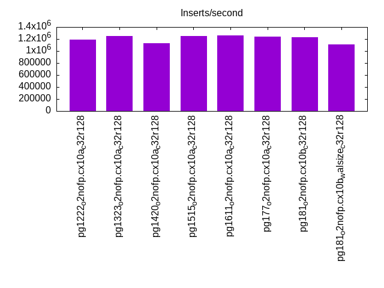
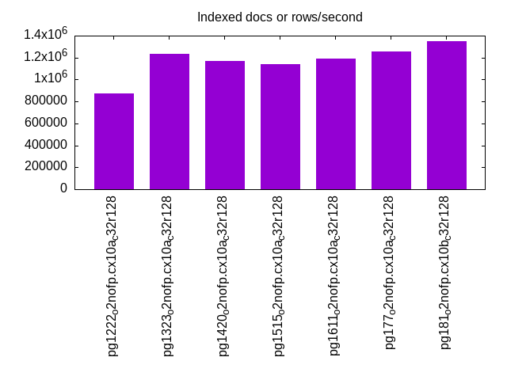
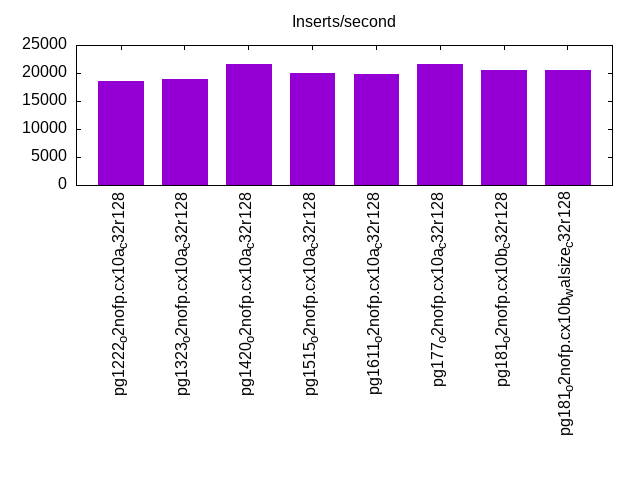
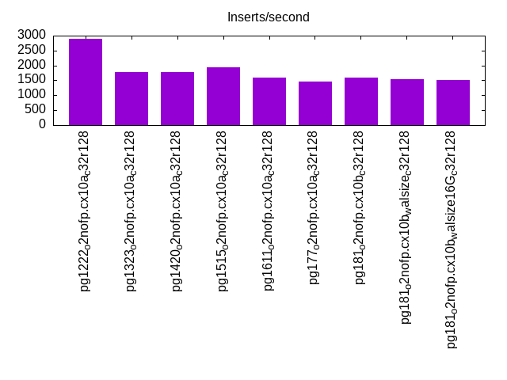
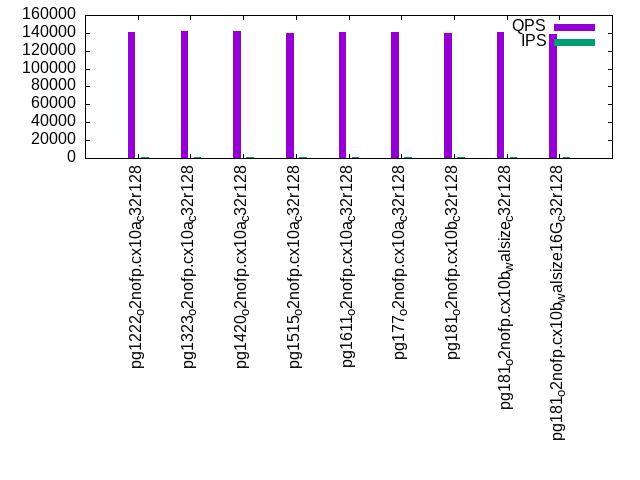
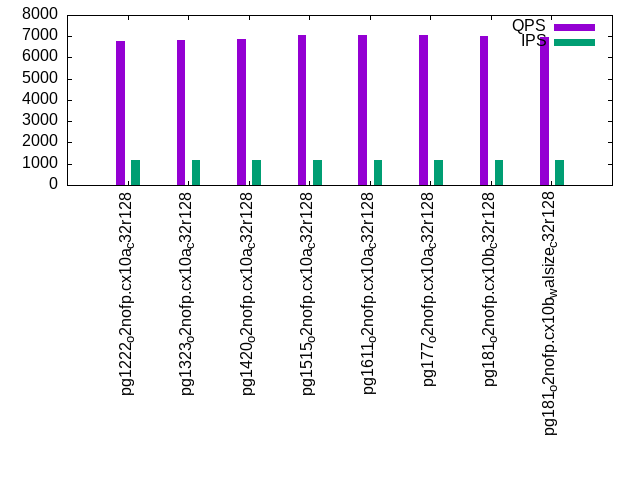
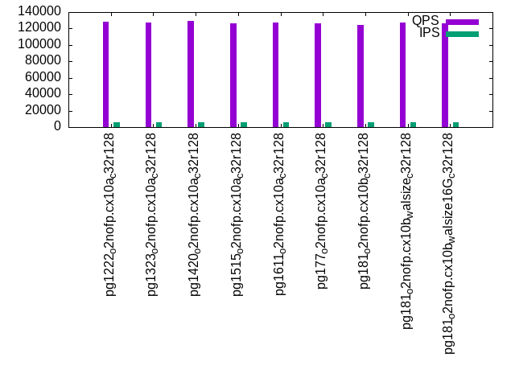
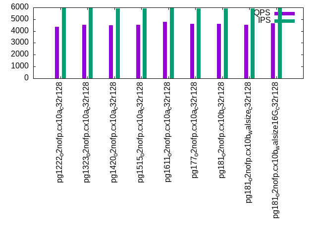
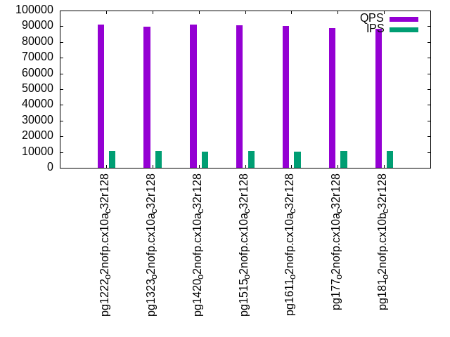
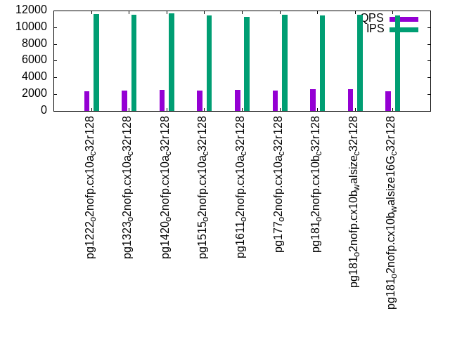

This is a report for the insert benchmark with 3600M docs and 12 client(s). It is generated by scripts (bash, awk, sed) and Tufte might not be impressed. An overview of the insert benchmark is here and a short update is here. Below, by DBMS, I mean DBMS+version.config. An example is my8020.c10b40 where my means MySQL, 8020 is version 8.0.20 and c10b40 is the name for the configuration file.
The test server has 32 cores, 128G RAM and 1 NVMe devices. The benchmark was run with 8 clients and there were 1 or 3 connections per client (1 for queries or inserts without rate limits, 1+1 for rate limited inserts+deletes). It uses 8 tables with a table per client. It loads 300M rows per table without secondary indexes, creates 3 secondary indexes per table, then inserts 4m+1m rows per table with a delete per insert to avoid growing the table. It then does 6 read+write tests for 1800s each that do queries as fast as possible with 100,100,500,500,1000,1000 inserts/s and the same for deletes/s per client concurrent with the queries. The database is larger than RAM and most tests are IO-bound except for the range query (qr*) tests that frequently have a cached working set. Clients and the DBMS share one server.
The tested DBMS are:
The numbers are inserts/s for l.i0, l.i1 and l.i2, indexed docs (or rows) /s for l.x and queries/s for qr100, qp100 thru qr1000, qp1000" The values are the average rate over the entire test for inserts (IPS) and queries (QPS). The range of values for IPS and QPS is split into 3 parts: bottom 25%, middle 50%, top 25%. Values in the bottom 25% have a red background, values in the top 25% have a green background and values in the middle have no color. A gray background is used for values that can be ignored because the DBMS did not sustain the target insert rate. Red backgrounds are not used when the minimum value is within 80% of the max value.
| dbms | l.i0 | l.x | l.i1 | l.i2 | qr100 | qp100 | qr500 | qp500 | qr1000 | qp1000 |
|---|---|---|---|---|---|---|---|---|---|---|
| pg1222_o2nofp.cx10a_c32r128 | 1190476 | 871249 | 18626 | 2889 | 140612 | 6795 | 128116 | 4367 | 90900 | 2378 |
| pg1323_o2nofp.cx10a_c32r128 | 1253046 | 1231190 | 18965 | 1786 | 141921 | 6845 | 127531 | 4542 | 89831 | 2417 |
| pg1420_o2nofp.cx10a_c32r128 | 1125704 | 1167694 | 21670 | 1781 | 142137 | 6888 | 128896 | 4488 | 91285 | 2543 |
| pg1515_o2nofp.cx10a_c32r128 | 1250000 | 1136722 | 19942 | 1927 | 140122 | 7050 | 126156 | 4542 | 90608 | 2399 |
| pg1611_o2nofp.cx10a_c32r128 | 1255230 | 1188119 | 19884 | 1580 | 140488 | 7067 | 126844 | 4783 | 89961 | 2504 |
| pg177_o2nofp.cx10a_c32r128 | 1238816 | 1252610 | 21525 | 1463 | 141252 | 7072 | 126363 | 4601 | 88811 | 2458 |
| pg181_o2nofp.cx10b_c32r128 | 1232877 | 1351351 | 20601 | 1598 | 139408 | 7024 | 124342 | 4603 | 88467 | 2600 |
| pg181_o2nofp.cx10b_walsize_c32r128 | 1113861 | 1330377 | 20452 | 1536 | 140633 | 6956 | 127143 | 4523 | 89092 | 2630 |
| pg181_o2nofp.cx10b_walsize16G_c32r128 | 1186944 | 1501877 | 14851 | 1504 | 138363 | 7021 | 125979 | 4647 | 95532 | 2387 |
This table has relative throughput, throughput for the DBMS relative to the DBMS in the first line, using the absolute throughput from the previous table. Values less than 0.95 have a yellow background. Values greater than 1.05 have a blue background.
| dbms | l.i0 | l.x | l.i1 | l.i2 | qr100 | qp100 | qr500 | qp500 | qr1000 | qp1000 |
|---|---|---|---|---|---|---|---|---|---|---|
| pg1222_o2nofp.cx10a_c32r128 | 1.00 | 1.00 | 1.00 | 1.00 | 1.00 | 1.00 | 1.00 | 1.00 | 1.00 | 1.00 |
| pg1323_o2nofp.cx10a_c32r128 | 1.05 | 1.41 | 1.02 | 0.62 | 1.01 | 1.01 | 1.00 | 1.04 | 0.99 | 1.02 |
| pg1420_o2nofp.cx10a_c32r128 | 0.95 | 1.34 | 1.16 | 0.62 | 1.01 | 1.01 | 1.01 | 1.03 | 1.00 | 1.07 |
| pg1515_o2nofp.cx10a_c32r128 | 1.05 | 1.30 | 1.07 | 0.67 | 1.00 | 1.04 | 0.98 | 1.04 | 1.00 | 1.01 |
| pg1611_o2nofp.cx10a_c32r128 | 1.05 | 1.36 | 1.07 | 0.55 | 1.00 | 1.04 | 0.99 | 1.10 | 0.99 | 1.05 |
| pg177_o2nofp.cx10a_c32r128 | 1.04 | 1.44 | 1.16 | 0.51 | 1.00 | 1.04 | 0.99 | 1.05 | 0.98 | 1.03 |
| pg181_o2nofp.cx10b_c32r128 | 1.04 | 1.55 | 1.11 | 0.55 | 0.99 | 1.03 | 0.97 | 1.05 | 0.97 | 1.09 |
| pg181_o2nofp.cx10b_walsize_c32r128 | 0.94 | 1.53 | 1.10 | 0.53 | 1.00 | 1.02 | 0.99 | 1.04 | 0.98 | 1.11 |
| pg181_o2nofp.cx10b_walsize16G_c32r128 | 1.00 | 1.72 | 0.80 | 0.52 | 0.98 | 1.03 | 0.98 | 1.06 | 1.05 | 1.00 |
This lists the average rate of inserts/s for the tests that do inserts concurrent with queries. For such tests the query rate is listed in the table above. The read+write tests are setup so that the insert rate should match the target rate every second. Cells that are not at least 95% of the target have a red background to indicate a failure to satisfy the target.
| dbms | qr100.L1 | qp100.L2 | qr500.L3 | qp500.L4 | qr1000.L5 | qp1000.L6 |
|---|---|---|---|---|---|---|
| pg1222_o2nofp.cx10a_c32r128 | 1193 | 1192 | 5940 | 5960 | 10730 | 11563 |
| pg1323_o2nofp.cx10a_c32r128 | 1193 | 1193 | 5950 | 5964 | 10688 | 11495 |
| pg1420_o2nofp.cx10a_c32r128 | 1192 | 1192 | 5944 | 5934 | 10480 | 11688 |
| pg1515_o2nofp.cx10a_c32r128 | 1192 | 1192 | 5937 | 5921 | 10568 | 11428 |
| pg1611_o2nofp.cx10a_c32r128 | 1193 | 1193 | 5950 | 5940 | 10455 | 11273 |
| pg177_o2nofp.cx10a_c32r128 | 1193 | 1193 | 5947 | 5931 | 10578 | 11459 |
| pg181_o2nofp.cx10b_c32r128 | 1192 | 1192 | 5944 | 5937 | 10578 | 11380 |
| pg181_o2nofp.cx10b_walsize_c32r128 | 1193 | 1192 | 5934 | 5924 | 10757 | 11514 |
| pg181_o2nofp.cx10b_walsize16G_c32r128 | 1193 | 1193 | 5954 | 5957 | 11650 | 11386 |
| target | 1200 | 1200 | 6000 | 6000 | 12000 | 12000 |
l.i0: load without secondary indexes. Graphs for performance per 1-second interval are here.
Average throughput:
Insert response time histogram: each cell has the percentage of responses that take <= the time in the header and max is the max response time in seconds. For the max column values in the top 25% of the range have a red background and in the bottom 25% of the range have a green background. The red background is not used when the min value is within 80% of the max value.
| dbms | 256us | 1ms | 4ms | 16ms | 64ms | 256ms | 1s | 4s | 16s | gt | max |
|---|---|---|---|---|---|---|---|---|---|---|---|
| pg1222_o2nofp.cx10a_c32r128 | 89.822 | 10.079 | 0.040 | 0.038 | 0.015 | 0.006 | 0.001 | 2.190 | |||
| pg1323_o2nofp.cx10a_c32r128 | 98.684 | 1.161 | 0.076 | 0.055 | 0.018 | 0.005 | 0.001 | 2.825 | |||
| pg1420_o2nofp.cx10a_c32r128 | 94.211 | 5.549 | 0.133 | 0.058 | 0.038 | 0.010 | 0.001 | 2.401 | |||
| pg1515_o2nofp.cx10a_c32r128 | 98.551 | 1.287 | 0.082 | 0.053 | 0.021 | 0.006 | nonzero | 1.888 | |||
| pg1611_o2nofp.cx10a_c32r128 | 98.666 | 1.163 | 0.083 | 0.060 | 0.023 | 0.006 | nonzero | 1.819 | |||
| pg177_o2nofp.cx10a_c32r128 | 98.335 | 1.492 | 0.097 | 0.052 | 0.018 | 0.006 | nonzero | 2.093 | |||
| pg181_o2nofp.cx10b_c32r128 | 98.378 | 1.445 | 0.095 | 0.055 | 0.021 | 0.006 | 0.001 | 1.767 | |||
| pg181_o2nofp.cx10b_walsize_c32r128 | 98.278 | 1.517 | 0.078 | 0.059 | 0.049 | 0.016 | 0.002 | 3.418 | |||
| pg181_o2nofp.cx10b_walsize16G_c32r128 | 97.959 | 1.795 | 0.096 | 0.102 | 0.045 | 0.003 | nonzero | 1.154 |
Performance metrics for the DBMS listed above. Some are normalized by throughput, others are not. Legend for results is here.
ips qps rps rmbps wps wmbps rpq rkbpq wpi wkbpi csps cpups cspq cpupq dbgb1 dbgb2 rss maxop p50 p99 tag 1190476 0 677 5.4 5492.7 475.9 0.001 0.005 0.005 0.409 128901 55.5 0.108 15 344.4 440.5 97.3 2.190 103887 7999 pg1222_o2nofp.cx10a_c32r128 1253046 0 637 5.1 4648.4 500.7 0.001 0.004 0.004 0.409 136208 55.3 0.109 14 344.4 440.5 10.1 2.825 114387 8098 pg1323_o2nofp.cx10a_c32r128 1125704 0 590 4.6 4238.4 453.0 0.001 0.004 0.004 0.412 124585 51.5 0.111 15 344.4 440.5 5.3 2.401 108788 5899 pg1420_o2nofp.cx10a_c32r128 1250000 0 646 5.0 4664.7 502.0 0.001 0.004 0.004 0.411 134764 54.9 0.108 14 344.4 440.5 7.4 1.888 113987 13698 pg1515_o2nofp.cx10a_c32r128 1255230 0 626 4.9 4612.9 502.5 0.000 0.004 0.004 0.410 136587 54.7 0.109 14 344.4 440.5 10.3 1.819 115487 9298 pg1611_o2nofp.cx10a_c32r128 1238816 0 641 5.1 4588.6 496.8 0.001 0.004 0.004 0.411 124989 54.6 0.101 14 344.4 440.5 97.2 2.093 113087 9599 pg177_o2nofp.cx10a_c32r128 1232877 0 636 5.0 4557.1 493.8 0.001 0.004 0.004 0.410 124047 54.3 0.101 14 344.4 440.5 97.2 1.767 113286 7799 pg181_o2nofp.cx10b_c32r128 1113861 0 580 4.6 4175.5 446.2 0.001 0.004 0.004 0.410 112333 49.2 0.101 14 344.4 440.5 97.2 3.418 112486 1899 pg181_o2nofp.cx10b_walsize_c32r128 1186944 0 604 4.8 4863.6 544.0 0.001 0.004 0.004 0.469 120048 53.2 0.101 14 344.4 360.5 11.1 1.154 111387 15798 pg181_o2nofp.cx10b_walsize16G_c32r128
Average values from iostat.
r/s rkB/s rrqm/s %rrqm r_await rareq-s w/s wkB/s wrqm/s %wrqm w_await wareq-s d/s dkB/s drqm/s %drqm d_await dareq-s f/s f_await aqu-sz %util 677.1 5527.1 0.019 0.157 0.355 3.390 5492.7 487346 670.8 8.569 3.812 96.14 3.197 2636.3 0.000 0.000 5.044 108.5 223.7 1.198 12.00 46.68 pg1222_o2nofp.cx10a_c32r128 637.3 5202.8 0.005 0.114 0.403 3.353 4648.4 512762 599.1 7.944 4.560 112.2 3.550 1208.2 0.000 0.000 4.865 70.98 228.2 1.282 12.92 46.21 pg1323_o2nofp.cx10a_c32r128 590.5 4721.6 0.078 0.828 1.006 4.251 4238.4 463852 479.9 6.566 5.868 110.5 3.469 1207.9 0.000 0.000 6.893 76.09 206.8 1.840 13.98 44.24 pg1420_o2nofp.cx10a_c32r128 646.0 5164.4 0.000 0.000 0.512 4.137 4664.7 514060 556.4 6.821 3.683 112.4 0.776 1816.6 0.000 0.000 2.004 107.4 228.5 1.274 11.40 45.12 pg1515_o2nofp.cx10a_c32r128 626.1 5004.6 0.000 0.000 0.640 3.816 4612.9 514527 457.0 6.058 4.006 113.1 0.735 645.5 0.000 0.000 1.925 66.87 228.6 1.321 11.77 44.94 pg1611_o2nofp.cx10a_c32r128 640.6 5204.4 0.000 0.000 0.750 4.111 4588.6 508743 412.9 5.646 3.664 112.6 0.480 581.7 0.000 0.000 0.922 134.8 224.9 1.261 10.96 43.65 pg177_o2nofp.cx10a_c32r128 636.0 5167.7 0.007 0.076 0.883 4.002 4557.1 505656 503.0 6.549 4.007 112.5 0.534 1039.5 0.000 0.000 1.374 165.0 226.2 1.375 11.12 44.03 pg181_o2nofp.cx10b_c32r128 580.5 4716.7 0.002 0.039 1.754 3.854 4175.5 456947 451.7 6.241 10.16 112.9 0.473 812.4 0.000 0.000 2.657 141.2 200.6 2.565 19.34 49.07 pg181_o2nofp.cx10b_walsize_c32r128 603.6 4905.6 0.000 0.000 0.564 3.905 4863.6 557103 636.1 9.678 3.140 113.9 2.041 14553.5 0.000 0.000 1.629 1804.3 253.1 0.979 11.95 46.01 pg181_o2nofp.cx10b_walsize16G_c32r128
l.x: create secondary indexes.
Average throughput:
Performance metrics for the DBMS listed above. Some are normalized by throughput, others are not. Legend for results is here.
ips qps rps rmbps wps wmbps rpq rkbpq wpi wkbpi csps cpups cspq cpupq dbgb1 dbgb2 rss maxop p50 p99 tag 871249 0 2407 297.9 4018.0 378.9 0.003 0.350 0.005 0.445 51675 12.5 0.059 5 691.9 788.0 64.0 0.004 NA NA pg1222_o2nofp.cx10a_c32r128 1231190 0 3385 420.5 3305.4 383.1 0.003 0.350 0.003 0.319 43901 16.6 0.036 4 691.5 787.6 55.1 0.159 NA NA pg1323_o2nofp.cx10a_c32r128 1167694 0 3213 399.1 3119.6 361.6 0.003 0.350 0.003 0.317 41790 15.6 0.036 4 691.5 787.6 52.6 0.006 NA NA pg1420_o2nofp.cx10a_c32r128 1136722 0 3722 461.6 3647.0 424.9 0.003 0.416 0.003 0.383 41543 15.0 0.037 4 691.5 787.6 38.6 0.005 NA NA pg1515_o2nofp.cx10a_c32r128 1188119 0 3875 481.6 3809.0 445.0 0.003 0.415 0.003 0.384 43715 15.5 0.037 4 691.5 787.6 31.0 0.004 NA NA pg1611_o2nofp.cx10a_c32r128 1252610 0 3538 440.4 3426.2 400.4 0.003 0.360 0.003 0.327 18896 15.1 0.015 4 691.5 787.6 54.1 0.003 NA NA pg177_o2nofp.cx10a_c32r128 1351351 0 3817 475.1 3705.7 433.1 0.003 0.360 0.003 0.328 19725 16.3 0.015 4 691.5 787.6 53.5 0.003 NA NA pg181_o2nofp.cx10b_c32r128 1330377 0 3760 468.2 3657.1 425.2 0.003 0.360 0.003 0.327 20232 16.0 0.015 4 691.5 787.6 51.9 0.004 NA NA pg181_o2nofp.cx10b_walsize_c32r128 1501877 0 4251 528.7 3922.3 471.7 0.003 0.360 0.003 0.322 22624 18.1 0.015 4 691.5 707.6 52.2 0.003 NA NA pg181_o2nofp.cx10b_walsize16G_c32r128
Average values from iostat.
r/s rkB/s rrqm/s %rrqm r_await rareq-s w/s wkB/s wrqm/s %wrqm w_await wareq-s d/s dkB/s drqm/s %drqm d_await dareq-s f/s f_await aqu-sz %util 2407.2 305043 0.000 0.000 1.361 127.0 4018.0 388007 171.7 3.058 37.52 108.3 4.382 76090.2 0.000 0.000 26.34 1783.2 34.60 10.33 75.77 91.01 pg1222_o2nofp.cx10a_c32r128 3385.1 430546 0.001 0.000 1.199 127.2 3305.4 392272 130.2 2.894 27.76 122.5 5.113 111537 0.000 0.000 22.29 1860.8 30.43 7.614 51.30 86.93 pg1323_o2nofp.cx10a_c32r128 3212.8 408665 0.003 0.000 1.121 127.4 3119.6 370246 90.73 2.119 31.34 122.5 4.585 84204.1 0.000 0.000 24.20 1286.4 28.17 7.858 52.32 87.94 pg1420_o2nofp.cx10a_c32r128 3721.9 472651 0.004 0.000 0.782 126.8 3647.0 435116 119.5 2.167 37.54 122.4 2.323 85803.4 0.000 0.000 20.55 3330.1 27.92 11.88 74.84 88.33 pg1515_o2nofp.cx10a_c32r128 3875.0 493141 0.007 0.000 4.412 127.1 3809.0 455665 100.5 2.057 62.38 122.3 3.051 107074 0.000 0.000 30.15 2461.9 28.90 23.15 92.05 88.09 pg1611_o2nofp.cx10a_c32r128 3538.2 450971 0.004 0.000 0.912 127.5 3426.2 410056 88.53 1.922 43.96 123.0 3.063 113091 0.000 0.000 19.95 2919.0 30.33 7.623 66.32 90.63 pg177_o2nofp.cx10a_c32r128 3816.8 486533 0.002 0.000 0.743 127.5 3705.7 443485 91.81 1.789 33.99 123.0 3.549 121704 0.000 0.000 14.35 2725.3 32.33 9.429 67.17 89.82 pg181_o2nofp.cx10b_c32r128 3760.5 479419 0.005 0.000 0.691 127.5 3657.1 435428 96.96 1.810 33.19 123.0 3.321 117150 0.000 0.000 18.62 3006.1 31.91 10.62 73.14 90.29 pg181_o2nofp.cx10b_walsize_c32r128 4250.9 541384 0.010 0.000 0.947 127.4 3922.3 482977 106.3 2.736 37.61 123.2 3.392 124275 0.000 0.000 15.12 4670.0 34.09 6.002 51.86 88.11 pg181_o2nofp.cx10b_walsize16G_c32r128
l.i1: continue load after secondary indexes created with 50 inserts per transaction. Graphs for performance per 1-second interval are here.
Average throughput:
Insert response time histogram: each cell has the percentage of responses that take <= the time in the header and max is the max response time in seconds. For the max column values in the top 25% of the range have a red background and in the bottom 25% of the range have a green background. The red background is not used when the min value is within 80% of the max value.
| dbms | 256us | 1ms | 4ms | 16ms | 64ms | 256ms | 1s | 4s | 16s | gt | max |
|---|---|---|---|---|---|---|---|---|---|---|---|
| pg1222_o2nofp.cx10a_c32r128 | 14.359 | 81.806 | 3.737 | 0.067 | 0.030 | 0.002 | 5.656 | ||||
| pg1323_o2nofp.cx10a_c32r128 | 23.988 | 72.540 | 3.289 | 0.168 | 0.016 | 3.487 | |||||
| pg1420_o2nofp.cx10a_c32r128 | 27.097 | 68.897 | 3.978 | 0.015 | 0.013 | 2.745 | |||||
| pg1515_o2nofp.cx10a_c32r128 | 20.383 | 75.793 | 3.778 | 0.034 | 0.012 | 2.852 | |||||
| pg1611_o2nofp.cx10a_c32r128 | 22.946 | 73.842 | 3.143 | 0.048 | 0.021 | nonzero | 4.040 | ||||
| pg177_o2nofp.cx10a_c32r128 | 28.989 | 68.025 | 2.966 | 0.010 | 0.008 | 0.001 | 6.307 | ||||
| pg181_o2nofp.cx10b_c32r128 | 25.833 | 70.584 | 3.541 | 0.025 | 0.017 | 3.066 | |||||
| pg181_o2nofp.cx10b_walsize_c32r128 | 23.802 | 72.563 | 3.570 | 0.040 | 0.024 | 3.920 | |||||
| pg181_o2nofp.cx10b_walsize16G_c32r128 | 35.885 | 53.924 | 9.646 | 0.531 | 0.012 | 0.001 | 4.350 |
Delete response time histogram: each cell has the percentage of responses that take <= the time in the header and max is the max response time in seconds. For the max column values in the top 25% of the range have a red background and in the bottom 25% of the range have a green background. The red background is not used when the min value is within 80% of the max value.
| dbms | 256us | 1ms | 4ms | 16ms | 64ms | 256ms | 1s | 4s | 16s | gt | max |
|---|---|---|---|---|---|---|---|---|---|---|---|
| pg1222_o2nofp.cx10a_c32r128 | 2.513 | 12.416 | 37.045 | 47.336 | 0.645 | 0.022 | 0.023 | nonzero | 4.127 | ||
| pg1323_o2nofp.cx10a_c32r128 | 2.256 | 16.118 | 37.925 | 42.468 | 1.123 | 0.101 | 0.010 | 2.801 | |||
| pg1420_o2nofp.cx10a_c32r128 | 2.225 | 11.362 | 32.407 | 53.850 | 0.133 | 0.013 | 0.011 | 2.738 | |||
| pg1515_o2nofp.cx10a_c32r128 | 2.235 | 10.986 | 29.417 | 56.859 | 0.470 | 0.021 | 0.011 | 2.842 | |||
| pg1611_o2nofp.cx10a_c32r128 | 2.150 | 10.292 | 26.767 | 60.481 | 0.268 | 0.023 | 0.019 | 3.544 | |||
| pg177_o2nofp.cx10a_c32r128 | 2.083 | 10.362 | 23.221 | 64.149 | 0.168 | 0.008 | 0.008 | 0.001 | 6.292 | ||
| pg181_o2nofp.cx10b_c32r128 | 2.059 | 10.632 | 27.269 | 59.731 | 0.281 | 0.012 | 0.015 | 2.389 | |||
| pg181_o2nofp.cx10b_walsize_c32r128 | 2.060 | 9.909 | 25.809 | 61.925 | 0.267 | 0.011 | 0.019 | 3.767 | |||
| pg181_o2nofp.cx10b_walsize16G_c32r128 | 1.983 | 8.572 | 21.658 | 62.830 | 4.867 | 0.079 | 0.009 | 0.001 | 4.356 |
Performance metrics for the DBMS listed above. Some are normalized by throughput, others are not. Legend for results is here.
ips qps rps rmbps wps wmbps rpq rkbpq wpi wkbpi csps cpups cspq cpupq dbgb1 dbgb2 rss maxop p50 p99 tag 18626 0 22558 179.1 28059.4 487.9 1.211 9.844 1.506 26.824 54043 24.2 2.901 416 699.8 795.8 97.4 5.656 1600 50 pg1222_o2nofp.cx10a_c32r128 18965 0 23693 245.4 30876.7 547.9 1.249 13.249 1.628 29.584 56532 25.1 2.981 424 699.2 795.3 4.2 3.487 1500 200 pg1323_o2nofp.cx10a_c32r128 21670 0 26217 208.6 32529.6 552.7 1.210 9.859 1.501 26.115 62160 29.7 2.868 439 699.4 795.4 2.5 2.745 1750 350 pg1420_o2nofp.cx10a_c32r128 19942 0 24181 192.8 30318.5 511.9 1.213 9.902 1.520 26.286 57571 28.8 2.887 462 699.4 795.4 2.5 2.852 1650 350 pg1515_o2nofp.cx10a_c32r128 19884 0 24203 193.8 29932.6 509.4 1.217 9.979 1.505 26.232 57003 30.3 2.867 488 699.4 795.4 2.6 4.040 1650 250 pg1611_o2nofp.cx10a_c32r128 21525 0 26103 209.0 32387.1 557.1 1.213 9.945 1.505 26.505 61099 32.1 2.839 477 699.4 795.4 97.2 6.307 1700 350 pg177_o2nofp.cx10a_c32r128 20601 0 24994 200.1 30940.8 527.7 1.213 9.948 1.502 26.230 58462 30.1 2.838 468 699.4 795.4 97.2 3.066 1800 400 pg181_o2nofp.cx10b_c32r128 20452 0 24797 197.7 30928.9 523.7 1.212 9.898 1.512 26.223 58130 29.9 2.842 468 699.4 795.4 97.2 3.920 1700 200 pg181_o2nofp.cx10b_walsize_c32r128 14851 0 18013 143.3 29365.9 543.0 1.213 9.879 1.977 37.442 43648 23.5 2.939 506 699.4 715.4 97.0 4.350 1250 150 pg181_o2nofp.cx10b_walsize16G_c32r128
Average values from iostat.
r/s rkB/s rrqm/s %rrqm r_await rareq-s w/s wkB/s wrqm/s %wrqm w_await wareq-s d/s dkB/s drqm/s %drqm d_await dareq-s f/s f_await aqu-sz %util 22558.5 183362 0.000 0.000 0.451 8.131 28059.4 499632 1323.0 6.693 3.986 23.19 2.935 13005.7 0.000 0.000 6.570 436.4 155.7 2.780 63.18 99.54 pg1222_o2nofp.cx10a_c32r128 23692.7 251263 0.001 0.000 0.452 11.10 30876.7 561063 729.2 4.130 2.199 22.52 3.455 19661.4 0.000 0.000 5.559 457.1 204.0 2.475 55.97 98.85 pg1323_o2nofp.cx10a_c32r128 26217.2 213656 0.000 0.000 0.465 8.157 32529.6 565914 293.5 3.169 1.274 20.79 2.184 1900.1 0.000 0.000 4.435 166.0 195.7 2.283 45.92 99.68 pg1420_o2nofp.cx10a_c32r128 24180.9 197461 0.001 0.000 0.444 8.171 30318.5 524193 321.5 2.872 1.386 20.46 0.076 1832.3 0.000 0.000 0.328 496.3 189.5 2.400 46.74 98.20 pg1515_o2nofp.cx10a_c32r128 24203.1 198424 0.001 0.000 0.432 8.216 29932.6 521588 278.4 2.611 1.414 20.67 0.089 633.6 0.000 0.000 0.291 248.8 190.2 2.364 46.60 98.42 pg1611_o2nofp.cx10a_c32r128 26103.0 214056 0.001 0.000 0.431 8.214 32387.1 570518 268.4 2.502 1.618 20.81 0.461 6290.0 0.000 0.000 0.641 388.8 193.5 2.348 43.77 98.59 pg177_o2nofp.cx10a_c32r128 24993.5 204938 0.001 0.000 0.438 8.214 30940.8 540357 223.6 2.279 1.356 20.91 0.069 542.4 0.000 0.000 0.242 292.0 184.6 2.318 45.40 97.28 pg181_o2nofp.cx10b_c32r128 24796.8 202427 0.000 0.000 0.447 8.170 30928.9 536302 230.4 2.262 1.610 20.69 0.068 532.0 0.000 0.000 0.389 302.8 183.3 2.572 48.16 98.50 pg181_o2nofp.cx10b_walsize_c32r128 18012.7 146714 0.002 0.000 0.554 8.160 29365.9 556072 457.6 5.515 2.713 25.83 9.218 101998 0.000 0.000 1.061 2011.8 137.2 2.117 49.55 95.23 pg181_o2nofp.cx10b_walsize16G_c32r128
l.i2: continue load after secondary indexes created with 5 inserts per transaction. Graphs for performance per 1-second interval are here.
Average throughput:
Insert response time histogram: each cell has the percentage of responses that take <= the time in the header and max is the max response time in seconds. For the max column values in the top 25% of the range have a red background and in the bottom 25% of the range have a green background. The red background is not used when the min value is within 80% of the max value.
| dbms | 256us | 1ms | 4ms | 16ms | 64ms | 256ms | 1s | 4s | 16s | gt | max |
|---|---|---|---|---|---|---|---|---|---|---|---|
| pg1222_o2nofp.cx10a_c32r128 | 21.435 | 74.806 | 2.373 | 1.339 | 0.048 | 0.237 | |||||
| pg1323_o2nofp.cx10a_c32r128 | nonzero | 27.367 | 69.087 | 3.143 | 0.388 | 0.016 | nonzero | 0.576 | |||
| pg1420_o2nofp.cx10a_c32r128 | 17.719 | 79.587 | 1.719 | 0.931 | 0.044 | nonzero | 0.540 | ||||
| pg1515_o2nofp.cx10a_c32r128 | 18.613 | 78.451 | 1.881 | 1.028 | 0.026 | 0.001 | 0.958 | ||||
| pg1611_o2nofp.cx10a_c32r128 | 18.712 | 78.747 | 1.688 | 0.849 | 0.004 | 0.122 | |||||
| pg177_o2nofp.cx10a_c32r128 | 21.874 | 75.784 | 1.526 | 0.769 | 0.045 | 0.001 | 0.728 | ||||
| pg181_o2nofp.cx10b_c32r128 | 18.166 | 79.256 | 1.707 | 0.862 | 0.008 | nonzero | 0.920 | ||||
| pg181_o2nofp.cx10b_walsize_c32r128 | 20.574 | 76.583 | 1.846 | 0.991 | 0.005 | nonzero | 0.914 | ||||
| pg181_o2nofp.cx10b_walsize16G_c32r128 | 17.341 | 81.976 | 0.527 | 0.142 | 0.014 | 0.182 |
Delete response time histogram: each cell has the percentage of responses that take <= the time in the header and max is the max response time in seconds. For the max column values in the top 25% of the range have a red background and in the bottom 25% of the range have a green background. The red background is not used when the min value is within 80% of the max value.
| dbms | 256us | 1ms | 4ms | 16ms | 64ms | 256ms | 1s | 4s | 16s | gt | max |
|---|---|---|---|---|---|---|---|---|---|---|---|
| pg1222_o2nofp.cx10a_c32r128 | 0.238 | 99.761 | 0.002 | 0.170 | |||||||
| pg1323_o2nofp.cx10a_c32r128 | nonzero | 2.297 | 11.534 | 30.157 | 56.009 | 0.002 | 0.001 | 0.594 | |||
| pg1420_o2nofp.cx10a_c32r128 | 0.046 | 99.952 | 0.001 | 0.001 | 0.558 | ||||||
| pg1515_o2nofp.cx10a_c32r128 | 1.546 | 98.450 | 0.003 | 0.002 | 0.983 | ||||||
| pg1611_o2nofp.cx10a_c32r128 | 1.510 | 98.489 | 0.001 | 0.180 | |||||||
| pg177_o2nofp.cx10a_c32r128 | 0.023 | 99.974 | 0.001 | 0.002 | 0.857 | ||||||
| pg181_o2nofp.cx10b_c32r128 | 0.040 | 99.954 | 0.004 | 0.002 | 0.953 | ||||||
| pg181_o2nofp.cx10b_walsize_c32r128 | 0.024 | 99.973 | 0.001 | 0.003 | 0.943 | ||||||
| pg181_o2nofp.cx10b_walsize16G_c32r128 | 0.021 | 99.978 | 0.001 | 0.177 |
Performance metrics for the DBMS listed above. Some are normalized by throughput, others are not. Legend for results is here.
ips qps rps rmbps wps wmbps rpq rkbpq wpi wkbpi csps cpups cspq cpupq dbgb1 dbgb2 rss maxop p50 p99 tag 2889 0 3344 26.6 4808.2 77.5 1.158 9.414 1.664 27.474 21708 38.3 7.513 4242 701.8 797.8 97.4 0.237 240 210 pg1222_o2nofp.cx10a_c32r128 1786 0 2109 23.3 3256.5 53.6 1.181 13.367 1.823 30.744 13834 19.6 7.744 3511 701.0 797.0 9.3 0.576 140 120 pg1323_o2nofp.cx10a_c32r128 1781 0 2062 16.4 3476.5 52.4 1.158 9.434 1.952 30.153 13529 27.1 7.598 4870 701.4 797.5 97.1 0.540 225 200 pg1420_o2nofp.cx10a_c32r128 1927 0 2226 17.7 3523.3 54.4 1.155 9.408 1.828 28.908 14405 28.9 7.474 4798 701.4 797.4 97.2 0.958 125 110 pg1515_o2nofp.cx10a_c32r128 1580 0 1827 14.7 2941.0 45.8 1.156 9.519 1.861 29.655 11958 28.4 7.566 5750 701.4 797.4 97.2 0.122 215 120 pg1611_o2nofp.cx10a_c32r128 1463 0 1687 13.6 2872.2 43.4 1.153 9.491 1.964 30.397 10209 24.0 6.980 5251 701.4 797.4 97.2 0.728 205 190 pg177_o2nofp.cx10a_c32r128 1598 0 1864 15.3 3066.8 47.6 1.167 9.790 1.919 30.497 11081 27.1 6.934 5427 701.4 797.4 97.2 0.920 215 190 pg181_o2nofp.cx10b_c32r128 1536 0 1769 14.1 3018.3 45.3 1.152 9.379 1.966 30.207 10695 23.5 6.965 4897 701.4 797.4 97.2 0.914 225 190 pg181_o2nofp.cx10b_walsize_c32r128 1504 0 1737 14.0 2966.8 45.8 1.155 9.520 1.972 31.169 10339 27.0 6.873 5744 701.4 717.4 97.0 0.182 120 105 pg181_o2nofp.cx10b_walsize16G_c32r128
Average values from iostat.
r/s rkB/s rrqm/s %rrqm r_await rareq-s w/s wkB/s wrqm/s %wrqm w_await wareq-s d/s dkB/s drqm/s %drqm d_await dareq-s f/s f_await aqu-sz %util 3344.5 27199.5 0.000 0.000 0.190 8.133 4808.2 79384.1 72.08 1.872 1.655 17.70 2.073 603.0 0.000 0.000 4.007 19.33 42.60 1.734 9.695 38.28 pg1222_o2nofp.cx10a_c32r128 2109.0 23879.8 0.000 0.000 0.139 9.052 3256.5 54924.3 42.08 2.331 0.355 19.58 2.071 558.3 0.000 0.000 1.890 14.24 32.36 0.935 2.074 23.59 pg1323_o2nofp.cx10a_c32r128 2062.4 16797.8 0.000 0.000 0.157 8.184 3476.5 53690.6 34.23 1.582 0.847 17.31 2.027 16.36 0.000 0.000 2.659 6.661 29.23 1.248 4.070 24.58 pg1420_o2nofp.cx10a_c32r128 2225.8 18133.9 0.000 0.000 0.157 8.201 3523.3 55716.6 34.93 1.416 0.923 17.21 0.022 23.93 0.000 0.000 0.048 2.938 30.37 1.322 4.390 26.31 pg1515_o2nofp.cx10a_c32r128 1827.1 15044.6 0.000 0.000 0.141 8.215 2941.0 46866.3 24.85 1.242 0.684 18.78 0.024 2.354 0.000 0.000 0.039 0.306 24.78 1.262 3.004 22.68 pg1611_o2nofp.cx10a_c32r128 1686.6 13882.8 0.000 0.000 0.145 8.273 2872.2 44461.7 19.92 1.225 0.667 17.82 0.004 12.33 0.000 0.000 0.017 5.934 24.42 1.110 2.925 20.14 pg177_o2nofp.cx10a_c32r128 1864.1 15644.8 0.000 0.000 0.142 8.328 3066.8 48734.5 20.59 1.046 0.700 18.77 0.003 0.386 0.000 0.000 0.028 0.529 26.02 1.222 3.048 22.71 pg181_o2nofp.cx10b_c32r128 1769.0 14400.8 0.000 0.000 0.147 8.213 3018.3 46382.4 21.14 1.238 0.780 18.09 0.005 0.361 0.000 0.000 0.046 0.542 25.54 1.198 3.673 21.14 pg181_o2nofp.cx10b_walsize_c32r128 1737.2 14321.6 0.000 0.000 0.107 8.281 2966.8 46888.0 21.48 1.629 0.191 22.99 0.007 2.626 0.000 0.000 0.084 5.558 26.55 0.564 0.902 19.16 pg181_o2nofp.cx10b_walsize16G_c32r128
qr100.L1: range queries with 100 insert/s per client. Graphs for performance per 1-second interval are here.
Average throughput:
Query response time histogram: each cell has the percentage of responses that take <= the time in the header and max is the max response time in seconds. For max values in the top 25% of the range have a red background and in the bottom 25% of the range have a green background. The red background is not used when the min value is within 80% of the max value.
| dbms | 256us | 1ms | 4ms | 16ms | 64ms | 256ms | 1s | 4s | 16s | gt | max |
|---|---|---|---|---|---|---|---|---|---|---|---|
| pg1222_o2nofp.cx10a_c32r128 | 99.984 | 0.013 | 0.002 | nonzero | nonzero | 0.036 | |||||
| pg1323_o2nofp.cx10a_c32r128 | 99.991 | 0.009 | nonzero | nonzero | 0.006 | ||||||
| pg1420_o2nofp.cx10a_c32r128 | 99.991 | 0.008 | nonzero | nonzero | 0.005 | ||||||
| pg1515_o2nofp.cx10a_c32r128 | 99.991 | 0.009 | nonzero | nonzero | nonzero | 0.027 | |||||
| pg1611_o2nofp.cx10a_c32r128 | 99.981 | 0.016 | 0.003 | nonzero | nonzero | 0.035 | |||||
| pg177_o2nofp.cx10a_c32r128 | 99.990 | 0.009 | 0.001 | nonzero | nonzero | 0.036 | |||||
| pg181_o2nofp.cx10b_c32r128 | 99.976 | 0.020 | 0.003 | nonzero | nonzero | nonzero | 0.128 | ||||
| pg181_o2nofp.cx10b_walsize_c32r128 | 99.979 | 0.017 | 0.003 | nonzero | nonzero | 0.054 | |||||
| pg181_o2nofp.cx10b_walsize16G_c32r128 | 99.990 | 0.009 | nonzero | nonzero | nonzero | 0.028 |
Insert response time histogram: each cell has the percentage of responses that take <= the time in the header and max is the max response time in seconds. For max values in the top 25% of the range have a red background and in the bottom 25% of the range have a green background. The red background is not used when the min value is within 80% of the max value.
| dbms | 256us | 1ms | 4ms | 16ms | 64ms | 256ms | 1s | 4s | 16s | gt | max |
|---|---|---|---|---|---|---|---|---|---|---|---|
| pg1222_o2nofp.cx10a_c32r128 | 96.065 | 3.546 | 0.389 | 0.129 | |||||||
| pg1323_o2nofp.cx10a_c32r128 | 99.440 | 0.560 | 0.028 | ||||||||
| pg1420_o2nofp.cx10a_c32r128 | 99.650 | 0.350 | 0.037 | ||||||||
| pg1515_o2nofp.cx10a_c32r128 | 99.688 | 0.312 | 0.050 | ||||||||
| pg1611_o2nofp.cx10a_c32r128 | 95.850 | 3.688 | 0.463 | 0.121 | |||||||
| pg177_o2nofp.cx10a_c32r128 | 98.942 | 0.921 | 0.137 | 0.132 | |||||||
| pg181_o2nofp.cx10b_c32r128 | 98.951 | 0.931 | 0.118 | 0.197 | |||||||
| pg181_o2nofp.cx10b_walsize_c32r128 | 94.604 | 4.891 | 0.505 | 0.121 | |||||||
| pg181_o2nofp.cx10b_walsize16G_c32r128 | 99.502 | 0.498 | 0.046 |
Delete response time histogram: each cell has the percentage of responses that take <= the time in the header and max is the max response time in seconds. For max values in the top 25% of the range have a red background and in the bottom 25% of the range have a green background. The red background is not used when the min value is within 80% of the max value.
| dbms | 256us | 1ms | 4ms | 16ms | 64ms | 256ms | 1s | 4s | 16s | gt | max |
|---|---|---|---|---|---|---|---|---|---|---|---|
| pg1222_o2nofp.cx10a_c32r128 | 45.352 | 54.632 | 0.014 | 0.002 | 0.016 | ||||||
| pg1323_o2nofp.cx10a_c32r128 | 44.428 | 55.572 | 0.004 | ||||||||
| pg1420_o2nofp.cx10a_c32r128 | 46.174 | 53.826 | 0.004 | ||||||||
| pg1515_o2nofp.cx10a_c32r128 | 46.725 | 53.273 | 0.002 | 0.024 | |||||||
| pg1611_o2nofp.cx10a_c32r128 | 46.775 | 53.199 | 0.016 | 0.009 | 0.023 | ||||||
| pg177_o2nofp.cx10a_c32r128 | 45.067 | 54.931 | 0.002 | 0.009 | |||||||
| pg181_o2nofp.cx10b_c32r128 | 43.669 | 56.292 | 0.023 | 0.016 | 0.023 | ||||||
| pg181_o2nofp.cx10b_walsize_c32r128 | 44.521 | 55.463 | 0.007 | 0.009 | 0.019 | ||||||
| pg181_o2nofp.cx10b_walsize16G_c32r128 | 44.190 | 55.810 | 0.004 |
Performance metrics for the DBMS listed above. Some are normalized by throughput, others are not. Legend for results is here.
ips qps rps rmbps wps wmbps rpq rkbpq wpi wkbpi csps cpups cspq cpupq dbgb1 dbgb2 rss maxop p50 p99 tag 1193 140612 1458 11.8 334.0 18.3 0.010 0.086 0.280 15.738 540179 37.9 3.842 86 702.0 798.0 97.4 0.036 11646 11422 pg1222_o2nofp.cx10a_c32r128 1193 141921 1450 11.9 627.9 21.1 0.010 0.086 0.526 18.111 545253 38.0 3.842 86 701.1 797.1 97.4 0.006 11951 11694 pg1323_o2nofp.cx10a_c32r128 1192 142137 1456 11.8 625.3 21.1 0.010 0.085 0.525 18.091 546203 38.0 3.843 86 701.5 797.6 97.1 0.005 11934 11758 pg1420_o2nofp.cx10a_c32r128 1192 140122 1458 11.8 608.0 20.9 0.010 0.087 0.510 17.947 538442 38.0 3.843 87 701.5 797.5 97.2 0.027 11791 11582 pg1515_o2nofp.cx10a_c32r128 1193 140488 1491 12.1 436.8 19.2 0.011 0.088 0.366 16.512 539566 38.0 3.841 87 701.5 797.5 97.2 0.035 11838 11598 pg1611_o2nofp.cx10a_c32r128 1193 141252 1491 12.2 476.7 19.6 0.011 0.088 0.400 16.848 542418 38.0 3.840 86 701.5 797.5 97.2 0.036 11854 11534 pg177_o2nofp.cx10a_c32r128 1192 139408 1475 11.9 534.5 20.2 0.011 0.088 0.448 17.327 535668 37.9 3.842 87 701.5 797.5 97.2 0.128 11598 11310 pg181_o2nofp.cx10b_c32r128 1193 140633 1472 11.9 307.3 18.0 0.010 0.086 0.258 15.442 540022 37.9 3.840 86 701.5 797.5 97.2 0.054 11774 11502 pg181_o2nofp.cx10b_walsize_c32r128 1193 138363 1474 11.9 1855.7 31.5 0.011 0.088 1.556 27.028 531282 38.0 3.840 88 701.5 717.5 97.0 0.028 11631 11439 pg181_o2nofp.cx10b_walsize16G_c32r128
Average values from iostat.
r/s rkB/s rrqm/s %rrqm r_await rareq-s w/s wkB/s wrqm/s %wrqm w_await wareq-s d/s dkB/s drqm/s %drqm d_await dareq-s f/s f_await aqu-sz %util 1457.9 12045.7 0.000 0.000 0.133 8.234 334.0 18771.3 34.43 10.89 0.937 68.15 1.998 11.18 0.000 0.000 2.052 5.549 15.22 0.985 0.431 6.782 pg1222_o2nofp.cx10a_c32r128 1449.7 12166.5 0.000 0.000 0.118 8.378 627.9 21600.7 19.41 5.797 0.172 61.90 1.997 11.19 0.000 0.000 1.295 5.384 15.20 0.505 0.246 5.794 pg1323_o2nofp.cx10a_c32r128 1455.8 12050.5 0.000 0.000 0.121 8.260 625.3 21565.0 18.29 5.551 0.168 62.33 2.001 11.60 0.000 0.000 1.239 5.799 13.78 0.506 0.246 5.578 pg1420_o2nofp.cx10a_c32r128 1458.0 12127.2 0.000 0.000 0.122 8.303 608.0 21392.3 18.49 5.559 0.168 63.15 0.001 0.002 0.000 0.000 0.003 0.011 14.88 0.505 0.242 5.719 pg1515_o2nofp.cx10a_c32r128 1491.2 12409.6 0.000 0.000 0.135 8.276 436.8 19693.8 11.38 3.864 1.043 67.27 0.001 0.004 0.000 0.000 0.006 0.022 13.70 1.002 0.476 6.516 pg1611_o2nofp.cx10a_c32r128 1490.9 12453.9 0.000 0.000 0.121 8.292 476.7 20094.1 9.981 3.406 0.286 66.29 0.001 0.002 0.000 0.000 0.003 0.011 13.26 0.636 0.457 6.047 pg177_o2nofp.cx10a_c32r128 1475.2 12198.6 0.000 0.000 0.120 8.268 534.5 20654.3 9.111 3.034 0.448 65.36 0.001 0.002 0.000 0.000 0.003 0.011 14.02 0.652 0.294 5.821 pg181_o2nofp.cx10b_c32r128 1472.1 12156.2 0.000 0.000 0.142 8.257 307.3 18417.2 9.998 3.655 1.216 70.03 0.001 0.002 0.000 0.000 0.003 0.011 12.06 1.172 0.493 6.907 pg181_o2nofp.cx10b_walsize_c32r128 1474.2 12159.4 0.000 0.000 0.121 8.249 1855.7 32236.7 14.88 2.258 0.098 40.17 0.003 0.148 0.000 0.000 0.017 0.387 14.80 0.500 0.268 7.392 pg181_o2nofp.cx10b_walsize16G_c32r128
qp100.L2: point queries with 100 insert/s per client. Graphs for performance per 1-second interval are here.
Average throughput:
Query response time histogram: each cell has the percentage of responses that take <= the time in the header and max is the max response time in seconds. For max values in the top 25% of the range have a red background and in the bottom 25% of the range have a green background. The red background is not used when the min value is within 80% of the max value.
| dbms | 256us | 1ms | 4ms | 16ms | 64ms | 256ms | 1s | 4s | 16s | gt | max |
|---|---|---|---|---|---|---|---|---|---|---|---|
| pg1222_o2nofp.cx10a_c32r128 | 1.295 | 97.251 | 1.437 | 0.016 | nonzero | 0.103 | |||||
| pg1323_o2nofp.cx10a_c32r128 | 1.323 | 97.328 | 1.343 | 0.005 | nonzero | nonzero | 0.678 | ||||
| pg1420_o2nofp.cx10a_c32r128 | 1.333 | 97.532 | 1.134 | 0.001 | 0.057 | ||||||
| pg1515_o2nofp.cx10a_c32r128 | 1.332 | 98.485 | 0.182 | 0.001 | 0.030 | ||||||
| pg1611_o2nofp.cx10a_c32r128 | 1.352 | 98.433 | 0.215 | nonzero | 0.018 | ||||||
| pg177_o2nofp.cx10a_c32r128 | nonzero | 1.332 | 98.500 | 0.168 | nonzero | 0.024 | |||||
| pg181_o2nofp.cx10b_c32r128 | nonzero | 1.238 | 98.607 | 0.155 | nonzero | 0.025 | |||||
| pg181_o2nofp.cx10b_walsize_c32r128 | 1.169 | 98.585 | 0.245 | 0.001 | 0.043 | ||||||
| pg181_o2nofp.cx10b_walsize16G_c32r128 | nonzero | 1.199 | 98.647 | 0.154 | nonzero | 0.029 |
Insert response time histogram: each cell has the percentage of responses that take <= the time in the header and max is the max response time in seconds. For max values in the top 25% of the range have a red background and in the bottom 25% of the range have a green background. The red background is not used when the min value is within 80% of the max value.
| dbms | 256us | 1ms | 4ms | 16ms | 64ms | 256ms | 1s | 4s | 16s | gt | max |
|---|---|---|---|---|---|---|---|---|---|---|---|
| pg1222_o2nofp.cx10a_c32r128 | 18.266 | 80.944 | 0.789 | 0.137 | |||||||
| pg1323_o2nofp.cx10a_c32r128 | 16.412 | 83.431 | 0.150 | 0.007 | 0.737 | ||||||
| pg1420_o2nofp.cx10a_c32r128 | 10.861 | 88.831 | 0.308 | 0.091 | |||||||
| pg1515_o2nofp.cx10a_c32r128 | 18.498 | 81.431 | 0.072 | 0.071 | |||||||
| pg1611_o2nofp.cx10a_c32r128 | 15.130 | 84.831 | 0.039 | 0.067 | |||||||
| pg177_o2nofp.cx10a_c32r128 | 30.093 | 69.875 | 0.032 | 0.069 | |||||||
| pg181_o2nofp.cx10b_c32r128 | 28.456 | 71.521 | 0.023 | 0.068 | |||||||
| pg181_o2nofp.cx10b_walsize_c32r128 | 23.715 | 76.188 | 0.097 | 0.080 | |||||||
| pg181_o2nofp.cx10b_walsize16G_c32r128 | 23.262 | 76.681 | 0.058 | 0.068 |
Delete response time histogram: each cell has the percentage of responses that take <= the time in the header and max is the max response time in seconds. For max values in the top 25% of the range have a red background and in the bottom 25% of the range have a green background. The red background is not used when the min value is within 80% of the max value.
| dbms | 256us | 1ms | 4ms | 16ms | 64ms | 256ms | 1s | 4s | 16s | gt | max |
|---|---|---|---|---|---|---|---|---|---|---|---|
| pg1222_o2nofp.cx10a_c32r128 | 98.833 | 1.150 | 0.016 | 0.022 | |||||||
| pg1323_o2nofp.cx10a_c32r128 | 99.275 | 0.720 | 0.005 | 0.018 | |||||||
| pg1420_o2nofp.cx10a_c32r128 | 99.120 | 0.880 | 0.015 | ||||||||
| pg1515_o2nofp.cx10a_c32r128 | 98.926 | 1.074 | 0.015 | ||||||||
| pg1611_o2nofp.cx10a_c32r128 | 97.900 | 2.100 | 0.015 | ||||||||
| pg177_o2nofp.cx10a_c32r128 | 98.958 | 1.042 | 0.014 | ||||||||
| pg181_o2nofp.cx10b_c32r128 | 99.100 | 0.898 | 0.002 | 0.019 | |||||||
| pg181_o2nofp.cx10b_walsize_c32r128 | 99.516 | 0.479 | 0.005 | 0.019 | |||||||
| pg181_o2nofp.cx10b_walsize16G_c32r128 | 99.500 | 0.500 | 0.015 |
Performance metrics for the DBMS listed above. Some are normalized by throughput, others are not. Legend for results is here.
ips qps rps rmbps wps wmbps rpq rkbpq wpi wkbpi csps cpups cspq cpupq dbgb1 dbgb2 rss maxop p50 p99 tag 1192 6795 89510 702.8 4515.9 51.0 13.173 105.906 3.789 43.848 198485 11.3 29.211 532 702.1 798.2 97.4 0.103 608 272 pg1222_o2nofp.cx10a_c32r128 1193 6845 90019 706.6 4201.6 48.5 13.151 105.704 3.523 41.640 199771 11.4 29.184 533 701.2 797.2 97.4 0.678 592 400 pg1323_o2nofp.cx10a_c32r128 1192 6888 90721 712.5 4199.1 48.4 13.170 105.921 3.523 41.614 201023 11.5 29.182 534 701.6 797.6 97.1 0.057 608 384 pg1420_o2nofp.cx10a_c32r128 1192 7050 92706 727.9 4213.4 48.6 13.149 105.720 3.535 41.716 205279 11.7 29.116 531 701.6 797.6 97.2 0.030 608 400 pg1515_o2nofp.cx10a_c32r128 1193 7067 92822 728.8 4387.4 49.9 13.134 105.603 3.679 42.834 205367 11.6 29.060 525 701.5 797.6 97.2 0.018 608 414 pg1611_o2nofp.cx10a_c32r128 1193 7072 92901 729.5 4344.3 49.5 13.136 105.625 3.642 42.539 205470 11.6 29.053 525 701.5 797.6 97.2 0.024 608 415 pg177_o2nofp.cx10a_c32r128 1192 7024 92321 725.0 4286.1 49.1 13.144 105.696 3.596 42.159 204214 11.6 29.075 529 701.5 797.6 97.2 0.025 608 400 pg181_o2nofp.cx10b_c32r128 1192 6956 91465 718.1 4528.8 51.0 13.149 105.704 3.799 43.769 202312 11.6 29.083 534 701.5 797.6 97.2 0.043 592 400 pg181_o2nofp.cx10b_walsize_c32r128 1193 7021 92281 725.1 3066.5 40.7 13.144 105.763 2.571 34.925 203995 11.5 29.057 524 701.5 717.6 97.0 0.029 608 416 pg181_o2nofp.cx10b_walsize16G_c32r128
Average values from iostat.
r/s rkB/s rrqm/s %rrqm r_await rareq-s w/s wkB/s wrqm/s %wrqm w_await wareq-s d/s dkB/s drqm/s %drqm d_await dareq-s f/s f_await aqu-sz %util 89510.4 719617 0.000 0.000 0.106 8.040 4515.9 52267.3 53.31 1.670 0.163 13.44 2.006 11.55 0.000 0.000 1.821 5.996 18.10 1.228 10.05 99.97 pg1222_o2nofp.cx10a_c32r128 90018.8 723566 0.000 0.000 0.103 8.038 4201.6 49663.9 32.65 1.057 0.101 13.46 2.008 11.50 0.000 0.000 1.848 5.657 16.89 1.283 9.908 99.97 pg1323_o2nofp.cx10a_c32r128 90721.1 729635 0.000 0.000 0.104 8.042 4199.1 49604.4 28.40 0.908 0.056 13.46 2.006 11.89 0.000 0.000 1.676 5.867 18.08 1.132 9.412 99.97 pg1420_o2nofp.cx10a_c32r128 92706.0 745378 0.000 0.000 0.100 8.041 4213.4 49725.8 28.65 0.919 0.035 13.47 0.005 0.298 0.000 0.000 0.006 0.196 18.26 0.640 9.176 99.97 pg1515_o2nofp.cx10a_c32r128 92821.9 746307 0.000 0.000 0.100 8.040 4387.4 51088.3 21.04 0.661 0.031 13.42 0.009 0.325 0.000 0.000 0.017 0.136 18.35 0.658 9.172 99.97 pg1611_o2nofp.cx10a_c32r128 92900.8 747014 0.000 0.000 0.100 8.041 4344.3 50736.6 18.34 0.556 0.032 13.42 0.004 0.294 0.000 0.000 0.009 0.254 18.09 0.625 9.118 99.97 pg177_o2nofp.cx10a_c32r128 92320.8 742365 0.000 0.000 0.099 8.041 4286.1 50253.2 17.48 0.534 0.030 13.41 0.003 0.285 0.000 0.000 0.009 0.365 17.95 0.621 9.029 99.97 pg181_o2nofp.cx10b_c32r128 91465.4 735307 0.000 0.000 0.100 8.040 4528.8 52172.9 19.11 0.606 0.043 13.36 0.003 0.307 0.000 0.000 0.008 0.316 18.50 0.653 9.091 99.97 pg181_o2nofp.cx10b_walsize_c32r128 92281.0 742517 0.000 0.000 0.100 8.046 3066.5 41655.0 24.73 0.810 0.034 14.21 0.009 0.292 0.000 0.000 0.048 0.321 20.18 0.622 8.978 99.97 pg181_o2nofp.cx10b_walsize16G_c32r128
qr500.L3: range queries with 500 insert/s per client. Graphs for performance per 1-second interval are here.
Average throughput:
Query response time histogram: each cell has the percentage of responses that take <= the time in the header and max is the max response time in seconds. For max values in the top 25% of the range have a red background and in the bottom 25% of the range have a green background. The red background is not used when the min value is within 80% of the max value.
| dbms | 256us | 1ms | 4ms | 16ms | 64ms | 256ms | 1s | 4s | 16s | gt | max |
|---|---|---|---|---|---|---|---|---|---|---|---|
| pg1222_o2nofp.cx10a_c32r128 | 99.956 | 0.037 | 0.003 | 0.001 | 0.002 | 0.001 | nonzero | nonzero | 1.088 | ||
| pg1323_o2nofp.cx10a_c32r128 | 99.941 | 0.048 | 0.007 | 0.001 | 0.002 | 0.001 | nonzero | nonzero | 1.118 | ||
| pg1420_o2nofp.cx10a_c32r128 | 99.959 | 0.036 | 0.002 | 0.001 | 0.001 | 0.001 | nonzero | nonzero | 2.183 | ||
| pg1515_o2nofp.cx10a_c32r128 | 99.951 | 0.042 | 0.004 | 0.001 | 0.002 | 0.001 | nonzero | 0.560 | |||
| pg1611_o2nofp.cx10a_c32r128 | 99.940 | 0.047 | 0.009 | 0.001 | 0.002 | 0.001 | nonzero | 0.381 | |||
| pg177_o2nofp.cx10a_c32r128 | 99.943 | 0.046 | 0.006 | 0.001 | 0.002 | 0.002 | nonzero | 0.323 | |||
| pg181_o2nofp.cx10b_c32r128 | 99.941 | 0.048 | 0.005 | 0.001 | 0.002 | 0.002 | nonzero | 0.281 | |||
| pg181_o2nofp.cx10b_walsize_c32r128 | 99.958 | 0.036 | 0.002 | 0.001 | 0.002 | 0.001 | nonzero | 0.436 | |||
| pg181_o2nofp.cx10b_walsize16G_c32r128 | 99.932 | 0.064 | 0.002 | 0.001 | 0.001 | nonzero | nonzero | nonzero | 1.042 |
Insert response time histogram: each cell has the percentage of responses that take <= the time in the header and max is the max response time in seconds. For max values in the top 25% of the range have a red background and in the bottom 25% of the range have a green background. The red background is not used when the min value is within 80% of the max value.
| dbms | 256us | 1ms | 4ms | 16ms | 64ms | 256ms | 1s | 4s | 16s | gt | max |
|---|---|---|---|---|---|---|---|---|---|---|---|
| pg1222_o2nofp.cx10a_c32r128 | 74.318 | 18.548 | 6.882 | 0.249 | 0.004 | 1.155 | |||||
| pg1323_o2nofp.cx10a_c32r128 | 74.069 | 19.156 | 6.567 | 0.205 | 0.003 | 1.147 | |||||
| pg1420_o2nofp.cx10a_c32r128 | 73.626 | 21.232 | 4.722 | 0.413 | 0.006 | 2.217 | |||||
| pg1515_o2nofp.cx10a_c32r128 | 70.983 | 22.984 | 5.568 | 0.465 | 0.584 | ||||||
| pg1611_o2nofp.cx10a_c32r128 | 68.143 | 21.090 | 10.435 | 0.332 | 0.417 | ||||||
| pg177_o2nofp.cx10a_c32r128 | 69.817 | 18.753 | 11.007 | 0.423 | 0.396 | ||||||
| pg181_o2nofp.cx10b_c32r128 | 68.529 | 19.959 | 11.087 | 0.425 | 0.393 | ||||||
| pg181_o2nofp.cx10b_walsize_c32r128 | 73.757 | 15.872 | 9.878 | 0.492 | 0.519 | ||||||
| pg181_o2nofp.cx10b_walsize16G_c32r128 | 68.513 | 28.817 | 2.609 | 0.059 | 0.003 | 1.089 |
Delete response time histogram: each cell has the percentage of responses that take <= the time in the header and max is the max response time in seconds. For max values in the top 25% of the range have a red background and in the bottom 25% of the range have a green background. The red background is not used when the min value is within 80% of the max value.
| dbms | 256us | 1ms | 4ms | 16ms | 64ms | 256ms | 1s | 4s | 16s | gt | max |
|---|---|---|---|---|---|---|---|---|---|---|---|
| pg1222_o2nofp.cx10a_c32r128 | 53.311 | 45.031 | 0.688 | 0.951 | 0.019 | nonzero | 1.021 | ||||
| pg1323_o2nofp.cx10a_c32r128 | 40.536 | 57.716 | 0.776 | 0.966 | 0.004 | 0.003 | 1.127 | ||||
| pg1420_o2nofp.cx10a_c32r128 | 40.584 | 58.005 | 0.536 | 0.848 | 0.022 | 0.005 | 2.190 | ||||
| pg1515_o2nofp.cx10a_c32r128 | 36.372 | 62.140 | 0.600 | 0.874 | 0.014 | 0.565 | |||||
| pg1611_o2nofp.cx10a_c32r128 | 31.623 | 66.932 | 0.587 | 0.850 | 0.008 | 0.394 | |||||
| pg177_o2nofp.cx10a_c32r128 | 33.381 | 64.704 | 0.825 | 1.069 | 0.021 | 0.326 | |||||
| pg181_o2nofp.cx10b_c32r128 | 31.900 | 66.184 | 0.805 | 1.106 | 0.005 | 0.304 | |||||
| pg181_o2nofp.cx10b_walsize_c32r128 | 37.653 | 60.646 | 0.711 | 0.968 | 0.022 | 0.466 | |||||
| pg181_o2nofp.cx10b_walsize16G_c32r128 | 30.869 | 67.362 | 1.671 | 0.098 | 0.186 |
Performance metrics for the DBMS listed above. Some are normalized by throughput, others are not. Legend for results is here.
ips qps rps rmbps wps wmbps rpq rkbpq wpi wkbpi csps cpups cspq cpupq dbgb1 dbgb2 rss maxop p50 p99 tag 5940 128116 8555 68.5 7528.1 137.9 0.067 0.547 1.267 23.763 508054 40.7 3.966 102 703.1 799.2 97.4 1.088 11102 6207 pg1222_o2nofp.cx10a_c32r128 5950 127531 8545 68.7 7367.8 135.7 0.067 0.552 1.238 23.357 504741 40.9 3.958 103 701.8 797.8 97.4 1.118 11022 5919 pg1323_o2nofp.cx10a_c32r128 5944 128896 8560 69.0 7368.5 135.5 0.066 0.548 1.240 23.350 510267 40.9 3.959 102 702.0 798.0 97.1 2.183 11134 5039 pg1420_o2nofp.cx10a_c32r128 5937 126156 8559 69.0 7379.0 135.6 0.068 0.560 1.243 23.392 499879 40.8 3.962 103 701.9 797.9 97.2 0.560 10894 5375 pg1515_o2nofp.cx10a_c32r128 5950 126844 8564 69.1 7470.6 136.7 0.068 0.558 1.255 23.532 501496 40.8 3.954 103 701.8 797.9 97.2 0.381 11007 5695 pg1611_o2nofp.cx10a_c32r128 5947 126363 8563 69.1 7454.1 136.5 0.068 0.560 1.253 23.505 499929 40.7 3.956 103 701.8 797.9 97.2 0.323 10974 4959 pg177_o2nofp.cx10a_c32r128 5944 124342 8561 69.1 7418.4 136.2 0.069 0.569 1.248 23.464 492199 40.9 3.958 105 701.8 797.9 97.2 0.281 10815 5999 pg181_o2nofp.cx10b_c32r128 5934 127143 8535 68.8 7500.2 137.0 0.067 0.554 1.264 23.642 503480 40.5 3.960 102 701.9 797.9 97.2 0.436 10959 5503 pg181_o2nofp.cx10b_walsize_c32r128 5954 125979 8560 69.0 11507.4 176.5 0.068 0.561 1.933 30.351 492252 42.7 3.907 108 701.9 717.9 97.0 1.042 10638 8607 pg181_o2nofp.cx10b_walsize16G_c32r128
Average values from iostat.
r/s rkB/s rrqm/s %rrqm r_await rareq-s w/s wkB/s wrqm/s %wrqm w_await wareq-s d/s dkB/s drqm/s %drqm d_await dareq-s f/s f_await aqu-sz %util 8555.4 70140.6 0.000 0.000 0.166 8.190 7528.1 141163 83.24 1.977 3.143 35.76 2.011 11.76 0.000 0.000 6.091 6.043 62.92 2.105 21.05 48.69 pg1222_o2nofp.cx10a_c32r128 8544.8 70362.2 0.000 0.000 0.164 8.229 7367.8 138985 49.45 1.387 2.878 35.43 2.015 29.72 0.000 0.000 5.643 9.617 62.54 1.917 20.03 45.19 pg1323_o2nofp.cx10a_c32r128 8560.2 70643.0 0.001 0.000 0.162 8.245 7368.5 138789 41.16 1.156 2.443 35.82 2.012 12.04 0.000 0.000 5.222 5.891 64.15 1.788 19.05 46.77 pg1420_o2nofp.cx10a_c32r128 8558.8 70647.9 0.000 0.000 0.163 8.248 7379.0 138886 43.06 1.166 2.678 35.87 0.014 0.456 0.000 0.000 0.040 0.385 63.20 1.968 20.70 48.64 pg1515_o2nofp.cx10a_c32r128 8564.2 70739.8 0.000 0.000 0.192 8.255 7470.6 140022 35.62 0.927 4.264 35.70 0.014 9.532 0.000 0.000 0.072 5.323 59.07 2.800 23.54 52.43 pg1611_o2nofp.cx10a_c32r128 8563.3 70721.3 0.000 0.000 0.192 8.252 7454.1 139784 32.42 0.855 4.327 35.82 0.003 0.167 0.000 0.000 0.076 0.430 58.85 2.894 22.89 51.25 pg177_o2nofp.cx10a_c32r128 8561.3 70721.6 0.000 0.000 0.194 8.254 7418.4 139465 31.61 0.795 4.309 36.07 0.011 117.5 0.000 0.000 0.018 51.37 58.53 2.834 23.52 48.94 pg181_o2nofp.cx10b_c32r128 8534.6 70455.2 0.001 0.000 0.185 8.248 7500.2 140291 35.11 0.833 4.531 35.98 0.004 9.200 0.000 0.000 0.078 11.60 59.23 2.951 23.20 56.34 pg181_o2nofp.cx10b_walsize_c32r128 8560.0 70654.1 0.000 0.000 0.167 8.243 11507.4 180700 39.84 0.972 1.113 22.55 0.058 361.8 0.000 0.000 0.253 368.8 60.42 1.077 12.12 31.65 pg181_o2nofp.cx10b_walsize16G_c32r128
qp500.L4: point queries with 500 insert/s per client. Graphs for performance per 1-second interval are here.
Average throughput:
Query response time histogram: each cell has the percentage of responses that take <= the time in the header and max is the max response time in seconds. For max values in the top 25% of the range have a red background and in the bottom 25% of the range have a green background. The red background is not used when the min value is within 80% of the max value.
| dbms | 256us | 1ms | 4ms | 16ms | 64ms | 256ms | 1s | 4s | 16s | gt | max |
|---|---|---|---|---|---|---|---|---|---|---|---|
| pg1222_o2nofp.cx10a_c32r128 | 0.324 | 82.781 | 16.510 | 0.384 | 0.001 | 0.194 | |||||
| pg1323_o2nofp.cx10a_c32r128 | 0.343 | 83.739 | 15.710 | 0.206 | 0.002 | nonzero | nonzero | 1.350 | |||
| pg1420_o2nofp.cx10a_c32r128 | 0.327 | 83.270 | 16.104 | 0.296 | 0.003 | 0.225 | |||||
| pg1515_o2nofp.cx10a_c32r128 | 0.320 | 84.301 | 14.919 | 0.456 | 0.004 | nonzero | nonzero | 1.435 | |||
| pg1611_o2nofp.cx10a_c32r128 | 0.355 | 86.638 | 12.702 | 0.304 | 0.001 | nonzero | nonzero | 1.212 | |||
| pg177_o2nofp.cx10a_c32r128 | 0.351 | 84.464 | 14.827 | 0.351 | 0.006 | 0.001 | nonzero | 1.282 | |||
| pg181_o2nofp.cx10b_c32r128 | 0.329 | 84.772 | 14.534 | 0.363 | 0.001 | 0.179 | |||||
| pg181_o2nofp.cx10b_walsize_c32r128 | 0.255 | 84.369 | 14.806 | 0.569 | 0.002 | nonzero | nonzero | 1.087 | |||
| pg181_o2nofp.cx10b_walsize16G_c32r128 | 0.336 | 85.005 | 14.319 | 0.339 | 0.001 | nonzero | nonzero | 1.444 |
Insert response time histogram: each cell has the percentage of responses that take <= the time in the header and max is the max response time in seconds. For max values in the top 25% of the range have a red background and in the bottom 25% of the range have a green background. The red background is not used when the min value is within 80% of the max value.
| dbms | 256us | 1ms | 4ms | 16ms | 64ms | 256ms | 1s | 4s | 16s | gt | max |
|---|---|---|---|---|---|---|---|---|---|---|---|
| pg1222_o2nofp.cx10a_c32r128 | 2.915 | 91.799 | 5.285 | 0.001 | 0.278 | ||||||
| pg1323_o2nofp.cx10a_c32r128 | 4.268 | 93.226 | 2.487 | 0.010 | 0.009 | 1.388 | |||||
| pg1420_o2nofp.cx10a_c32r128 | 6.487 | 90.770 | 2.688 | 0.054 | 0.403 | ||||||
| pg1515_o2nofp.cx10a_c32r128 | 18.400 | 77.614 | 3.901 | 0.081 | 0.004 | 1.474 | |||||
| pg1611_o2nofp.cx10a_c32r128 | 15.743 | 81.698 | 2.536 | 0.018 | 0.006 | 1.240 | |||||
| pg177_o2nofp.cx10a_c32r128 | 7.823 | 88.807 | 3.290 | 0.065 | 0.015 | 1.324 | |||||
| pg181_o2nofp.cx10b_c32r128 | 5.956 | 90.708 | 3.336 | 0.238 | |||||||
| pg181_o2nofp.cx10b_walsize_c32r128 | 34.645 | 61.342 | 3.983 | 0.026 | 0.004 | 1.122 | |||||
| pg181_o2nofp.cx10b_walsize16G_c32r128 | 6.310 | 90.612 | 3.055 | 0.017 | 0.006 | 1.478 |
Delete response time histogram: each cell has the percentage of responses that take <= the time in the header and max is the max response time in seconds. For max values in the top 25% of the range have a red background and in the bottom 25% of the range have a green background. The red background is not used when the min value is within 80% of the max value.
| dbms | 256us | 1ms | 4ms | 16ms | 64ms | 256ms | 1s | 4s | 16s | gt | max |
|---|---|---|---|---|---|---|---|---|---|---|---|
| pg1222_o2nofp.cx10a_c32r128 | 65.571 | 34.415 | 0.014 | 0.136 | |||||||
| pg1323_o2nofp.cx10a_c32r128 | 55.760 | 44.186 | 0.037 | 0.011 | 0.006 | 1.363 | |||||
| pg1420_o2nofp.cx10a_c32r128 | 57.357 | 42.605 | 0.038 | 0.128 | |||||||
| pg1515_o2nofp.cx10a_c32r128 | 86.825 | 12.978 | 0.192 | 0.006 | 0.811 | ||||||
| pg1611_o2nofp.cx10a_c32r128 | 67.247 | 32.703 | 0.039 | 0.006 | 0.006 | 1.232 | |||||
| pg177_o2nofp.cx10a_c32r128 | 37.432 | 62.319 | 0.227 | 0.022 | 0.956 | ||||||
| pg181_o2nofp.cx10b_c32r128 | 45.935 | 54.029 | 0.036 | 0.086 | |||||||
| pg181_o2nofp.cx10b_walsize_c32r128 | 86.352 | 13.596 | 0.035 | 0.014 | 0.003 | 1.102 | |||||
| pg181_o2nofp.cx10b_walsize16G_c32r128 | 47.684 | 52.279 | 0.020 | 0.013 | 0.004 | 1.459 |
Performance metrics for the DBMS listed above. Some are normalized by throughput, others are not. Legend for results is here.
ips qps rps rmbps wps wmbps rpq rkbpq wpi wkbpi csps cpups cspq cpupq dbgb1 dbgb2 rss maxop p50 p99 tag 5960 4367 70858 555.6 13986.0 185.6 16.225 130.281 2.347 31.894 156066 16.2 35.735 1187 704.1 800.1 97.4 0.194 384 80 pg1222_o2nofp.cx10a_c32r128 5964 4542 73008 572.6 14163.2 186.4 16.073 129.082 2.375 32.005 161021 16.8 35.449 1184 702.5 798.6 97.4 1.350 384 112 pg1323_o2nofp.cx10a_c32r128 5934 4488 72289 567.4 14106.4 185.2 16.108 129.459 2.377 31.953 158923 16.6 35.412 1184 702.4 798.5 97.1 0.225 384 48 pg1420_o2nofp.cx10a_c32r128 5921 4542 72922 572.3 14133.2 185.2 16.055 129.020 2.387 32.035 160654 15.3 35.372 1078 702.3 798.3 97.2 1.435 384 48 pg1515_o2nofp.cx10a_c32r128 5940 4783 76225 598.0 14136.2 185.4 15.938 128.034 2.380 31.966 167093 16.6 34.938 1111 702.4 798.5 97.2 1.212 400 48 pg1611_o2nofp.cx10a_c32r128 5931 4601 73805 579.2 14038.1 184.4 16.042 128.913 2.367 31.833 161293 17.3 35.058 1203 702.2 798.2 97.3 1.282 400 48 pg177_o2nofp.cx10a_c32r128 5937 4603 73935 580.2 14091.7 184.9 16.062 129.073 2.373 31.895 161574 17.3 35.100 1203 702.2 798.2 97.2 0.179 400 48 pg181_o2nofp.cx10b_c32r128 5924 4523 72872 571.8 14064.7 184.5 16.111 129.452 2.374 31.886 159378 15.3 35.237 1082 702.3 798.3 97.2 1.087 384 48 pg181_o2nofp.cx10b_walsize_c32r128 5957 4647 74638 585.9 12836.9 186.0 16.063 129.123 2.155 31.981 162997 17.2 35.078 1185 702.2 718.3 97.0 1.444 384 48 pg181_o2nofp.cx10b_walsize16G_c32r128
Average values from iostat.
r/s rkB/s rrqm/s %rrqm r_await rareq-s w/s wkB/s wrqm/s %wrqm w_await wareq-s d/s dkB/s drqm/s %drqm d_await dareq-s f/s f_await aqu-sz %util 70857.9 568978 0.000 0.000 0.210 8.031 13986.0 190094 372.7 1.963 0.754 13.94 2.026 120.5 0.000 0.000 3.329 28.01 75.31 2.345 23.20 99.98 pg1222_o2nofp.cx10a_c32r128 73008.5 586331 0.000 0.000 0.185 8.032 14163.2 190864 173.5 1.031 0.541 13.87 2.025 48.28 0.000 0.000 3.000 13.04 75.74 2.166 20.43 99.97 pg1323_o2nofp.cx10a_c32r128 72289.4 580985 0.000 0.000 0.200 8.038 14106.4 189612 131.8 0.789 0.534 13.85 2.027 75.48 0.000 0.000 2.992 19.01 76.20 2.204 20.23 99.90 pg1420_o2nofp.cx10a_c32r128 72922.4 585997 0.000 0.000 0.205 8.037 14133.2 189681 169.7 1.005 0.727 13.92 0.025 45.77 0.000 0.000 0.084 17.58 77.35 2.229 21.79 99.91 pg1515_o2nofp.cx10a_c32r128 76225.2 612337 0.000 0.000 0.183 8.034 14136.2 189896 121.5 0.715 0.530 13.97 0.022 45.92 0.000 0.000 0.068 15.91 78.06 1.966 19.00 99.97 pg1611_o2nofp.cx10a_c32r128 73804.6 593102 0.000 0.000 0.200 8.037 14038.1 188794 104.7 0.641 0.570 13.95 0.010 63.45 0.000 0.000 0.046 58.95 74.92 2.173 19.70 99.97 pg177_o2nofp.cx10a_c32r128 73934.8 594148 0.000 0.000 0.198 8.037 14091.7 189370 94.11 0.606 0.511 13.90 0.008 36.52 0.000 0.000 0.043 38.95 74.85 2.167 19.43 99.97 pg181_o2nofp.cx10b_c32r128 72872.1 585513 0.000 0.000 0.201 8.036 14064.7 188903 98.92 0.635 0.611 13.83 0.019 207.4 0.000 0.000 0.044 55.13 79.24 2.085 19.91 99.97 pg181_o2nofp.cx10b_walsize_c32r128 74638.4 599998 0.000 0.000 0.186 8.040 12836.9 190510 124.5 0.957 0.537 15.96 0.045 254.3 0.000 0.000 0.271 322.2 86.72 2.098 19.87 99.97 pg181_o2nofp.cx10b_walsize16G_c32r128
qr1000.L5: range queries with 1000 insert/s per client. Graphs for performance per 1-second interval are here.
Average throughput:
Query response time histogram: each cell has the percentage of responses that take <= the time in the header and max is the max response time in seconds. For max values in the top 25% of the range have a red background and in the bottom 25% of the range have a green background. The red background is not used when the min value is within 80% of the max value.
| dbms | 256us | 1ms | 4ms | 16ms | 64ms | 256ms | 1s | 4s | 16s | gt | max |
|---|---|---|---|---|---|---|---|---|---|---|---|
| pg1222_o2nofp.cx10a_c32r128 | 99.543 | 0.420 | 0.011 | 0.006 | 0.011 | 0.009 | nonzero | 0.980 | |||
| pg1323_o2nofp.cx10a_c32r128 | 99.544 | 0.411 | 0.019 | 0.006 | 0.011 | 0.009 | nonzero | nonzero | 1.333 | ||
| pg1420_o2nofp.cx10a_c32r128 | 99.564 | 0.406 | 0.009 | 0.004 | 0.008 | 0.009 | nonzero | 0.518 | |||
| pg1515_o2nofp.cx10a_c32r128 | 99.603 | 0.359 | 0.017 | 0.004 | 0.008 | 0.009 | nonzero | nonzero | 1.166 | ||
| pg1611_o2nofp.cx10a_c32r128 | 99.596 | 0.371 | 0.010 | 0.005 | 0.008 | 0.009 | nonzero | 0.746 | |||
| pg177_o2nofp.cx10a_c32r128 | 99.553 | 0.407 | 0.018 | 0.005 | 0.008 | 0.009 | nonzero | nonzero | 1.079 | ||
| pg181_o2nofp.cx10b_c32r128 | 99.537 | 0.423 | 0.017 | 0.005 | 0.008 | 0.009 | nonzero | nonzero | 1.043 | ||
| pg181_o2nofp.cx10b_walsize_c32r128 | 99.546 | 0.411 | 0.016 | 0.006 | 0.011 | 0.008 | nonzero | nonzero | 3.182 | ||
| pg181_o2nofp.cx10b_walsize16G_c32r128 | 99.517 | 0.456 | 0.015 | 0.007 | 0.005 | 0.001 | nonzero | nonzero | 1.235 |
Insert response time histogram: each cell has the percentage of responses that take <= the time in the header and max is the max response time in seconds. For max values in the top 25% of the range have a red background and in the bottom 25% of the range have a green background. The red background is not used when the min value is within 80% of the max value.
| dbms | 256us | 1ms | 4ms | 16ms | 64ms | 256ms | 1s | 4s | 16s | gt | max |
|---|---|---|---|---|---|---|---|---|---|---|---|
| pg1222_o2nofp.cx10a_c32r128 | 46.030 | 43.818 | 9.806 | 0.342 | 0.003 | 1.503 | |||||
| pg1323_o2nofp.cx10a_c32r128 | 50.388 | 40.149 | 9.027 | 0.432 | 0.003 | 2.520 | |||||
| pg1420_o2nofp.cx10a_c32r128 | 51.256 | 39.951 | 7.950 | 0.842 | nonzero | 1.036 | |||||
| pg1515_o2nofp.cx10a_c32r128 | 56.010 | 35.270 | 8.063 | 0.653 | 0.003 | 1.359 | |||||
| pg1611_o2nofp.cx10a_c32r128 | 55.096 | 35.638 | 8.437 | 0.830 | 0.805 | ||||||
| pg177_o2nofp.cx10a_c32r128 | 52.009 | 39.376 | 7.918 | 0.694 | 0.003 | 1.129 | |||||
| pg181_o2nofp.cx10b_c32r128 | 51.979 | 39.432 | 7.876 | 0.712 | 0.001 | 1.092 | |||||
| pg181_o2nofp.cx10b_walsize_c32r128 | 50.630 | 40.411 | 8.444 | 0.503 | 0.012 | 3.198 | |||||
| pg181_o2nofp.cx10b_walsize16G_c32r128 | 57.604 | 39.149 | 3.089 | 0.156 | 0.002 | 1.289 |
Delete response time histogram: each cell has the percentage of responses that take <= the time in the header and max is the max response time in seconds. For max values in the top 25% of the range have a red background and in the bottom 25% of the range have a green background. The red background is not used when the min value is within 80% of the max value.
| dbms | 256us | 1ms | 4ms | 16ms | 64ms | 256ms | 1s | 4s | 16s | gt | max |
|---|---|---|---|---|---|---|---|---|---|---|---|
| pg1222_o2nofp.cx10a_c32r128 | 17.756 | 76.150 | 6.007 | 0.086 | nonzero | 1.002 | |||||
| pg1323_o2nofp.cx10a_c32r128 | 7.556 | 86.062 | 6.261 | 0.116 | 0.004 | 2.490 | |||||
| pg1420_o2nofp.cx10a_c32r128 | 12.118 | 82.926 | 4.811 | 0.145 | 0.556 | ||||||
| pg1515_o2nofp.cx10a_c32r128 | 12.066 | 82.667 | 5.169 | 0.095 | 0.003 | 1.364 | |||||
| pg1611_o2nofp.cx10a_c32r128 | 7.020 | 87.334 | 5.500 | 0.145 | 0.669 | ||||||
| pg177_o2nofp.cx10a_c32r128 | 2.874 | 91.658 | 5.312 | 0.154 | 0.003 | 1.112 | |||||
| pg181_o2nofp.cx10b_c32r128 | 4.419 | 89.999 | 5.436 | 0.144 | 0.002 | 1.090 | |||||
| pg181_o2nofp.cx10b_walsize_c32r128 | 6.120 | 87.868 | 5.919 | 0.083 | 0.010 | 0.001 | 5.134 | ||||
| pg181_o2nofp.cx10b_walsize16G_c32r128 | 4.094 | 94.811 | 1.083 | 0.010 | 0.002 | 1.272 |
Performance metrics for the DBMS listed above. Some are normalized by throughput, others are not. Legend for results is here.
ips qps rps rmbps wps wmbps rpq rkbpq wpi wkbpi csps cpups cspq cpupq dbgb1 dbgb2 rss maxop p50 p99 tag 10730 90900 13944 112.3 16009.7 269.8 0.153 1.265 1.492 25.751 354001 52.2 3.894 184 706.0 802.1 97.4 0.980 8543 2592 pg1222_o2nofp.cx10a_c32r128 10688 89831 13858 111.6 15859.2 267.4 0.154 1.272 1.484 25.623 348667 54.0 3.881 192 704.5 800.5 97.4 1.333 8431 2064 pg1323_o2nofp.cx10a_c32r128 10480 91285 13599 109.6 15512.4 261.3 0.149 1.230 1.480 25.533 355706 52.6 3.897 184 704.2 800.2 97.1 0.518 8495 2592 pg1420_o2nofp.cx10a_c32r128 10568 90608 13740 110.8 15650.3 263.4 0.152 1.252 1.481 25.524 355503 52.7 3.924 186 704.0 800.0 97.2 1.166 8511 2336 pg1515_o2nofp.cx10a_c32r128 10455 89961 13592 109.5 15491.2 261.0 0.151 1.246 1.482 25.564 350915 53.4 3.901 190 704.3 800.4 97.2 0.746 8415 2512 pg1611_o2nofp.cx10a_c32r128 10578 88811 13737 110.7 15701.6 264.1 0.155 1.276 1.484 25.564 343208 54.1 3.864 195 704.0 800.0 97.3 1.079 8367 2000 pg177_o2nofp.cx10a_c32r128 10578 88467 13740 110.7 15807.1 265.4 0.155 1.282 1.494 25.697 342275 54.2 3.869 196 703.9 799.9 97.2 1.043 8271 2096 pg181_o2nofp.cx10b_c32r128 10757 89092 13983 112.6 15957.3 268.9 0.157 1.294 1.483 25.596 346226 54.0 3.886 194 704.1 800.2 97.2 3.182 8351 2240 pg181_o2nofp.cx10b_walsize_c32r128 11650 95532 15118 122.0 23226.4 355.7 0.158 1.307 1.994 31.267 363959 60.4 3.810 202 703.7 719.8 97.0 1.235 8239 4367 pg181_o2nofp.cx10b_walsize16G_c32r128
Average values from iostat.
r/s rkB/s rrqm/s %rrqm r_await rareq-s w/s wkB/s wrqm/s %wrqm w_await wareq-s d/s dkB/s drqm/s %drqm d_await dareq-s f/s f_await aqu-sz %util 13944.2 114981 0.000 0.000 0.229 8.220 16009.7 276309 324.0 2.337 4.884 20.21 2.043 314.0 0.000 0.000 9.870 60.37 104.3 2.954 50.40 75.64 pg1222_o2nofp.cx10a_c32r128 13857.8 114258 0.000 0.000 0.231 8.220 15859.2 273847 226.6 1.891 4.875 19.77 2.045 272.2 0.000 0.000 9.357 49.26 109.3 2.790 47.81 75.45 pg1323_o2nofp.cx10a_c32r128 13599.4 112279 0.000 0.000 0.255 8.228 15512.4 267589 150.0 1.424 5.122 19.80 2.036 172.0 0.000 0.000 9.983 39.14 112.1 3.099 47.58 75.08 pg1420_o2nofp.cx10a_c32r128 13739.7 113431 0.000 0.000 0.234 8.228 15650.3 269727 164.3 1.295 4.848 19.74 0.031 121.9 0.000 0.000 0.417 55.01 112.5 3.099 46.84 76.41 pg1515_o2nofp.cx10a_c32r128 13592.0 112087 0.001 0.000 0.260 8.221 15491.2 267272 145.9 1.562 5.046 20.49 0.042 310.8 0.000 0.000 0.043 98.18 111.9 3.119 47.63 77.53 pg1611_o2nofp.cx10a_c32r128 13736.6 113367 0.000 0.000 0.240 8.225 15701.6 270416 120.4 1.070 4.967 19.98 0.027 281.6 0.000 0.000 0.165 136.6 108.8 3.045 46.79 74.66 pg177_o2nofp.cx10a_c32r128 13739.7 113408 0.000 0.000 0.233 8.226 15807.1 271816 115.0 0.935 4.909 19.34 0.017 137.0 0.000 0.000 0.050 75.49 108.8 3.154 47.09 76.05 pg181_o2nofp.cx10b_c32r128 13982.7 115329 0.000 0.000 0.243 8.222 15957.3 275332 120.7 1.195 4.399 20.42 0.023 213.0 0.000 0.000 0.088 125.9 108.5 2.759 46.72 78.12 pg181_o2nofp.cx10b_walsize_c32r128 15118.5 124885 0.000 0.000 0.241 8.236 23226.4 364279 98.14 1.562 1.454 19.04 0.441 3861.3 0.000 0.000 0.333 784.6 133.8 1.337 30.88 71.16 pg181_o2nofp.cx10b_walsize16G_c32r128
qp1000.L6: point queries with 1000 insert/s per client. Graphs for performance per 1-second interval are here.
Average throughput:
Query response time histogram: each cell has the percentage of responses that take <= the time in the header and max is the max response time in seconds. For max values in the top 25% of the range have a red background and in the bottom 25% of the range have a green background. The red background is not used when the min value is within 80% of the max value.
| dbms | 256us | 1ms | 4ms | 16ms | 64ms | 256ms | 1s | 4s | 16s | gt | max |
|---|---|---|---|---|---|---|---|---|---|---|---|
| pg1222_o2nofp.cx10a_c32r128 | 0.010 | 46.537 | 51.842 | 1.595 | 0.016 | 0.001 | nonzero | 2.047 | |||
| pg1323_o2nofp.cx10a_c32r128 | 0.011 | 49.171 | 48.995 | 1.818 | 0.003 | 0.001 | 0.001 | 2.206 | |||
| pg1420_o2nofp.cx10a_c32r128 | 0.011 | 51.512 | 47.286 | 1.184 | 0.007 | nonzero | 0.001 | 2.795 | |||
| pg1515_o2nofp.cx10a_c32r128 | 0.010 | 47.186 | 50.758 | 2.032 | 0.013 | nonzero | 0.001 | 2.917 | |||
| pg1611_o2nofp.cx10a_c32r128 | 0.014 | 53.009 | 44.606 | 2.357 | 0.011 | 0.001 | 0.001 | 2.250 | |||
| pg177_o2nofp.cx10a_c32r128 | 0.012 | 48.601 | 49.457 | 1.921 | 0.010 | nonzero | 0.001 | 1.982 | |||
| pg181_o2nofp.cx10b_c32r128 | 0.015 | 54.949 | 43.263 | 1.751 | 0.022 | 0.001 | nonzero | 2.857 | |||
| pg181_o2nofp.cx10b_walsize_c32r128 | 0.012 | 54.294 | 44.214 | 1.466 | 0.014 | 0.124 | |||||
| pg181_o2nofp.cx10b_walsize16G_c32r128 | 0.012 | 49.190 | 48.642 | 2.124 | 0.032 | nonzero | 0.258 |
Insert response time histogram: each cell has the percentage of responses that take <= the time in the header and max is the max response time in seconds. For max values in the top 25% of the range have a red background and in the bottom 25% of the range have a green background. The red background is not used when the min value is within 80% of the max value.
| dbms | 256us | 1ms | 4ms | 16ms | 64ms | 256ms | 1s | 4s | 16s | gt | max |
|---|---|---|---|---|---|---|---|---|---|---|---|
| pg1222_o2nofp.cx10a_c32r128 | 8.244 | 86.181 | 5.557 | 0.013 | 0.006 | 2.912 | |||||
| pg1323_o2nofp.cx10a_c32r128 | 10.162 | 82.566 | 7.260 | 0.008 | 0.004 | 3.420 | |||||
| pg1420_o2nofp.cx10a_c32r128 | 11.515 | 84.905 | 3.566 | 0.009 | 0.006 | 2.866 | |||||
| pg1515_o2nofp.cx10a_c32r128 | 10.250 | 84.531 | 5.206 | 0.009 | 0.004 | 0.001 | 4.269 | ||||
| pg1611_o2nofp.cx10a_c32r128 | 11.489 | 82.000 | 6.482 | 0.017 | 0.011 | 3.006 | |||||
| pg177_o2nofp.cx10a_c32r128 | 11.731 | 83.144 | 5.113 | 0.006 | 0.006 | 2.554 | |||||
| pg181_o2nofp.cx10b_c32r128 | 15.353 | 79.456 | 5.151 | 0.035 | 0.005 | 2.919 | |||||
| pg181_o2nofp.cx10b_walsize_c32r128 | 12.739 | 82.849 | 4.383 | 0.029 | 0.404 | ||||||
| pg181_o2nofp.cx10b_walsize16G_c32r128 | 6.809 | 87.629 | 5.402 | 0.161 | 0.404 |
Delete response time histogram: each cell has the percentage of responses that take <= the time in the header and max is the max response time in seconds. For max values in the top 25% of the range have a red background and in the bottom 25% of the range have a green background. The red background is not used when the min value is within 80% of the max value.
| dbms | 256us | 1ms | 4ms | 16ms | 64ms | 256ms | 1s | 4s | 16s | gt | max |
|---|---|---|---|---|---|---|---|---|---|---|---|
| pg1222_o2nofp.cx10a_c32r128 | 1.998 | 97.915 | 0.080 | 0.003 | 0.004 | 2.849 | |||||
| pg1323_o2nofp.cx10a_c32r128 | 0.202 | 99.744 | 0.043 | 0.008 | 0.003 | 3.120 | |||||
| pg1420_o2nofp.cx10a_c32r128 | 0.057 | 99.906 | 0.031 | 0.006 | 2.816 | ||||||
| pg1515_o2nofp.cx10a_c32r128 | 0.899 | 98.779 | 0.317 | nonzero | 0.005 | 2.930 | |||||
| pg1611_o2nofp.cx10a_c32r128 | 0.040 | 99.725 | 0.218 | 0.006 | 0.011 | 2.281 | |||||
| pg177_o2nofp.cx10a_c32r128 | 0.005 | 99.710 | 0.278 | 0.002 | 0.005 | 2.168 | |||||
| pg181_o2nofp.cx10b_c32r128 | 0.046 | 99.786 | 0.161 | 0.004 | 0.002 | 2.857 | |||||
| pg181_o2nofp.cx10b_walsize_c32r128 | 0.013 | 99.905 | 0.082 | 0.180 | |||||||
| pg181_o2nofp.cx10b_walsize16G_c32r128 | 0.008 | 99.828 | 0.164 | 0.185 |
Performance metrics for the DBMS listed above. Some are normalized by throughput, others are not. Legend for results is here.
ips qps rps rmbps wps wmbps rpq rkbpq wpi wkbpi csps cpups cspq cpupq dbgb1 dbgb2 rss maxop p50 p99 tag 11563 2378 55449 435.3 22618.8 331.2 23.319 187.463 1.956 29.328 122874 27.1 51.673 3647 708.6 804.6 97.4 2.047 192 48 pg1222_o2nofp.cx10a_c32r128 11495 2417 56090 440.1 22721.1 329.7 23.208 186.471 1.977 29.370 124311 28.2 51.434 3734 707.4 803.4 97.4 2.206 192 48 pg1323_o2nofp.cx10a_c32r128 11688 2543 58120 456.2 22856.6 332.6 22.859 183.743 1.956 29.140 128446 28.9 50.518 3637 706.7 802.8 97.1 2.795 192 48 pg1420_o2nofp.cx10a_c32r128 11428 2399 55664 436.9 22574.4 327.2 23.203 186.476 1.975 29.317 122683 27.5 51.139 3668 706.6 802.6 97.2 2.917 192 48 pg1515_o2nofp.cx10a_c32r128 11273 2504 56912 446.7 22260.4 322.5 22.733 182.716 1.975 29.290 124415 28.4 49.696 3630 706.9 803.0 97.2 2.250 208 32 pg1611_o2nofp.cx10a_c32r128 11459 2458 56545 443.9 22695.8 328.0 23.000 184.874 1.981 29.315 123266 29.4 50.139 3827 706.6 802.6 97.3 1.982 208 48 pg177_o2nofp.cx10a_c32r128 11380 2600 58440 458.7 22284.8 323.5 22.479 180.669 1.958 29.106 127214 28.6 48.934 3520 706.5 802.5 97.2 2.857 208 32 pg181_o2nofp.cx10b_c32r128 11514 2630 59198 464.7 22630.3 328.1 22.507 180.908 1.965 29.178 128904 29.5 49.009 3589 706.7 802.8 97.3 0.124 208 32 pg181_o2nofp.cx10b_walsize_c32r128 11386 2387 55631 436.7 23323.2 352.7 23.305 187.350 2.048 31.717 120747 29.7 50.583 3981 706.3 722.4 97.0 0.258 192 32 pg181_o2nofp.cx10b_walsize16G_c32r128
Average values from iostat.
r/s rkB/s rrqm/s %rrqm r_await rareq-s w/s wkB/s wrqm/s %wrqm w_await wareq-s d/s dkB/s drqm/s %drqm d_await dareq-s f/s f_await aqu-sz %util 55449.2 445769 0.000 0.000 0.359 8.041 22618.8 339117 798.8 2.887 1.176 15.22 2.085 608.9 0.000 0.000 4.103 88.67 148.5 2.562 41.33 99.89 pg1222_o2nofp.cx10a_c32r128 56090.3 450682 0.000 0.000 0.360 8.037 22721.1 337620 441.5 1.894 1.122 15.03 2.057 309.7 0.000 0.000 4.115 63.54 149.1 2.483 40.54 99.99 pg1323_o2nofp.cx10a_c32r128 58120.2 467184 0.000 0.000 0.335 8.040 22856.6 340597 300.0 1.159 1.119 15.12 2.048 269.7 0.000 0.000 3.920 61.54 153.1 2.442 37.56 99.91 pg1420_o2nofp.cx10a_c32r128 55663.6 447357 0.000 0.000 0.375 8.039 22574.4 335052 414.5 1.711 1.068 15.04 0.042 184.7 0.000 0.000 0.409 92.51 148.3 2.469 39.31 99.99 pg1515_o2nofp.cx10a_c32r128 56911.9 457428 0.000 0.000 0.382 8.040 22260.4 330201 315.5 1.397 1.126 15.01 0.032 129.7 0.000 0.000 0.135 67.25 145.5 2.443 40.80 99.97 pg1611_o2nofp.cx10a_c32r128 56545.3 454513 0.000 0.000 0.362 8.040 22695.8 335913 227.5 0.978 1.012 14.97 0.031 243.9 0.000 0.000 0.161 141.1 146.1 2.491 38.93 99.97 pg177_o2nofp.cx10a_c32r128 58439.5 469685 0.000 0.000 0.369 8.040 22284.8 331239 227.0 1.064 1.203 15.11 0.029 285.8 0.000 0.000 0.204 162.3 146.4 2.476 39.24 99.99 pg181_o2nofp.cx10b_c32r128 59197.6 475825 0.000 0.000 0.349 8.040 22630.3 335954 221.7 1.000 0.969 15.17 0.029 210.2 0.000 0.000 0.184 151.0 147.9 2.379 36.84 99.96 pg181_o2nofp.cx10b_walsize_c32r128 55631.4 447223 0.000 0.000 0.384 8.041 23323.2 361142 105.3 2.230 0.885 19.14 0.187 1411.0 0.000 0.000 0.546 821.0 168.5 2.254 36.30 99.97 pg181_o2nofp.cx10b_walsize16G_c32r128
l.i0: load without secondary indexes
Performance metrics for all DBMS, not just the ones listed above. Some are normalized by throughput, others are not. Legend for results is here.
ips qps rps rmbps wps wmbps rpq rkbpq wpi wkbpi csps cpups cspq cpupq dbgb1 dbgb2 rss maxop p50 p99 tag 1190476 0 677 5.4 5492.7 475.9 0.001 0.005 0.005 0.409 128901 55.5 0.108 15 344.4 440.5 97.3 2.190 103887 7999 pg1222_o2nofp.cx10a_c32r128 1253046 0 637 5.1 4648.4 500.7 0.001 0.004 0.004 0.409 136208 55.3 0.109 14 344.4 440.5 10.1 2.825 114387 8098 pg1323_o2nofp.cx10a_c32r128 1125704 0 590 4.6 4238.4 453.0 0.001 0.004 0.004 0.412 124585 51.5 0.111 15 344.4 440.5 5.3 2.401 108788 5899 pg1420_o2nofp.cx10a_c32r128 1250000 0 646 5.0 4664.7 502.0 0.001 0.004 0.004 0.411 134764 54.9 0.108 14 344.4 440.5 7.4 1.888 113987 13698 pg1515_o2nofp.cx10a_c32r128 1255230 0 626 4.9 4612.9 502.5 0.000 0.004 0.004 0.410 136587 54.7 0.109 14 344.4 440.5 10.3 1.819 115487 9298 pg1611_o2nofp.cx10a_c32r128 1238816 0 641 5.1 4588.6 496.8 0.001 0.004 0.004 0.411 124989 54.6 0.101 14 344.4 440.5 97.2 2.093 113087 9599 pg177_o2nofp.cx10a_c32r128 1232877 0 636 5.0 4557.1 493.8 0.001 0.004 0.004 0.410 124047 54.3 0.101 14 344.4 440.5 97.2 1.767 113286 7799 pg181_o2nofp.cx10b_c32r128 1113861 0 580 4.6 4175.5 446.2 0.001 0.004 0.004 0.410 112333 49.2 0.101 14 344.4 440.5 97.2 3.418 112486 1899 pg181_o2nofp.cx10b_walsize_c32r128 1186944 0 604 4.8 4863.6 544.0 0.001 0.004 0.004 0.469 120048 53.2 0.101 14 344.4 360.5 11.1 1.154 111387 15798 pg181_o2nofp.cx10b_walsize16G_c32r128
l.x: create secondary indexes
Performance metrics for all DBMS, not just the ones listed above. Some are normalized by throughput, others are not. Legend for results is here.
ips qps rps rmbps wps wmbps rpq rkbpq wpi wkbpi csps cpups cspq cpupq dbgb1 dbgb2 rss maxop p50 p99 tag 871249 0 2407 297.9 4018.0 378.9 0.003 0.350 0.005 0.445 51675 12.5 0.059 5 691.9 788.0 64.0 0.004 NA NA pg1222_o2nofp.cx10a_c32r128 1231190 0 3385 420.5 3305.4 383.1 0.003 0.350 0.003 0.319 43901 16.6 0.036 4 691.5 787.6 55.1 0.159 NA NA pg1323_o2nofp.cx10a_c32r128 1167694 0 3213 399.1 3119.6 361.6 0.003 0.350 0.003 0.317 41790 15.6 0.036 4 691.5 787.6 52.6 0.006 NA NA pg1420_o2nofp.cx10a_c32r128 1136722 0 3722 461.6 3647.0 424.9 0.003 0.416 0.003 0.383 41543 15.0 0.037 4 691.5 787.6 38.6 0.005 NA NA pg1515_o2nofp.cx10a_c32r128 1188119 0 3875 481.6 3809.0 445.0 0.003 0.415 0.003 0.384 43715 15.5 0.037 4 691.5 787.6 31.0 0.004 NA NA pg1611_o2nofp.cx10a_c32r128 1252610 0 3538 440.4 3426.2 400.4 0.003 0.360 0.003 0.327 18896 15.1 0.015 4 691.5 787.6 54.1 0.003 NA NA pg177_o2nofp.cx10a_c32r128 1351351 0 3817 475.1 3705.7 433.1 0.003 0.360 0.003 0.328 19725 16.3 0.015 4 691.5 787.6 53.5 0.003 NA NA pg181_o2nofp.cx10b_c32r128 1330377 0 3760 468.2 3657.1 425.2 0.003 0.360 0.003 0.327 20232 16.0 0.015 4 691.5 787.6 51.9 0.004 NA NA pg181_o2nofp.cx10b_walsize_c32r128 1501877 0 4251 528.7 3922.3 471.7 0.003 0.360 0.003 0.322 22624 18.1 0.015 4 691.5 707.6 52.2 0.003 NA NA pg181_o2nofp.cx10b_walsize16G_c32r128
l.i1: continue load after secondary indexes created with 50 inserts per transaction
Performance metrics for all DBMS, not just the ones listed above. Some are normalized by throughput, others are not. Legend for results is here.
ips qps rps rmbps wps wmbps rpq rkbpq wpi wkbpi csps cpups cspq cpupq dbgb1 dbgb2 rss maxop p50 p99 tag 18626 0 22558 179.1 28059.4 487.9 1.211 9.844 1.506 26.824 54043 24.2 2.901 416 699.8 795.8 97.4 5.656 1600 50 pg1222_o2nofp.cx10a_c32r128 18965 0 23693 245.4 30876.7 547.9 1.249 13.249 1.628 29.584 56532 25.1 2.981 424 699.2 795.3 4.2 3.487 1500 200 pg1323_o2nofp.cx10a_c32r128 21670 0 26217 208.6 32529.6 552.7 1.210 9.859 1.501 26.115 62160 29.7 2.868 439 699.4 795.4 2.5 2.745 1750 350 pg1420_o2nofp.cx10a_c32r128 19942 0 24181 192.8 30318.5 511.9 1.213 9.902 1.520 26.286 57571 28.8 2.887 462 699.4 795.4 2.5 2.852 1650 350 pg1515_o2nofp.cx10a_c32r128 19884 0 24203 193.8 29932.6 509.4 1.217 9.979 1.505 26.232 57003 30.3 2.867 488 699.4 795.4 2.6 4.040 1650 250 pg1611_o2nofp.cx10a_c32r128 21525 0 26103 209.0 32387.1 557.1 1.213 9.945 1.505 26.505 61099 32.1 2.839 477 699.4 795.4 97.2 6.307 1700 350 pg177_o2nofp.cx10a_c32r128 20601 0 24994 200.1 30940.8 527.7 1.213 9.948 1.502 26.230 58462 30.1 2.838 468 699.4 795.4 97.2 3.066 1800 400 pg181_o2nofp.cx10b_c32r128 20452 0 24797 197.7 30928.9 523.7 1.212 9.898 1.512 26.223 58130 29.9 2.842 468 699.4 795.4 97.2 3.920 1700 200 pg181_o2nofp.cx10b_walsize_c32r128 14851 0 18013 143.3 29365.9 543.0 1.213 9.879 1.977 37.442 43648 23.5 2.939 506 699.4 715.4 97.0 4.350 1250 150 pg181_o2nofp.cx10b_walsize16G_c32r128
l.i2: continue load after secondary indexes created with 5 inserts per transaction
Performance metrics for all DBMS, not just the ones listed above. Some are normalized by throughput, others are not. Legend for results is here.
ips qps rps rmbps wps wmbps rpq rkbpq wpi wkbpi csps cpups cspq cpupq dbgb1 dbgb2 rss maxop p50 p99 tag 2889 0 3344 26.6 4808.2 77.5 1.158 9.414 1.664 27.474 21708 38.3 7.513 4242 701.8 797.8 97.4 0.237 240 210 pg1222_o2nofp.cx10a_c32r128 1786 0 2109 23.3 3256.5 53.6 1.181 13.367 1.823 30.744 13834 19.6 7.744 3511 701.0 797.0 9.3 0.576 140 120 pg1323_o2nofp.cx10a_c32r128 1781 0 2062 16.4 3476.5 52.4 1.158 9.434 1.952 30.153 13529 27.1 7.598 4870 701.4 797.5 97.1 0.540 225 200 pg1420_o2nofp.cx10a_c32r128 1927 0 2226 17.7 3523.3 54.4 1.155 9.408 1.828 28.908 14405 28.9 7.474 4798 701.4 797.4 97.2 0.958 125 110 pg1515_o2nofp.cx10a_c32r128 1580 0 1827 14.7 2941.0 45.8 1.156 9.519 1.861 29.655 11958 28.4 7.566 5750 701.4 797.4 97.2 0.122 215 120 pg1611_o2nofp.cx10a_c32r128 1463 0 1687 13.6 2872.2 43.4 1.153 9.491 1.964 30.397 10209 24.0 6.980 5251 701.4 797.4 97.2 0.728 205 190 pg177_o2nofp.cx10a_c32r128 1598 0 1864 15.3 3066.8 47.6 1.167 9.790 1.919 30.497 11081 27.1 6.934 5427 701.4 797.4 97.2 0.920 215 190 pg181_o2nofp.cx10b_c32r128 1536 0 1769 14.1 3018.3 45.3 1.152 9.379 1.966 30.207 10695 23.5 6.965 4897 701.4 797.4 97.2 0.914 225 190 pg181_o2nofp.cx10b_walsize_c32r128 1504 0 1737 14.0 2966.8 45.8 1.155 9.520 1.972 31.169 10339 27.0 6.873 5744 701.4 717.4 97.0 0.182 120 105 pg181_o2nofp.cx10b_walsize16G_c32r128
qr100.L1: range queries with 100 insert/s per client
Performance metrics for all DBMS, not just the ones listed above. Some are normalized by throughput, others are not. Legend for results is here.
ips qps rps rmbps wps wmbps rpq rkbpq wpi wkbpi csps cpups cspq cpupq dbgb1 dbgb2 rss maxop p50 p99 tag 1193 140612 1458 11.8 334.0 18.3 0.010 0.086 0.280 15.738 540179 37.9 3.842 86 702.0 798.0 97.4 0.036 11646 11422 pg1222_o2nofp.cx10a_c32r128 1193 141921 1450 11.9 627.9 21.1 0.010 0.086 0.526 18.111 545253 38.0 3.842 86 701.1 797.1 97.4 0.006 11951 11694 pg1323_o2nofp.cx10a_c32r128 1192 142137 1456 11.8 625.3 21.1 0.010 0.085 0.525 18.091 546203 38.0 3.843 86 701.5 797.6 97.1 0.005 11934 11758 pg1420_o2nofp.cx10a_c32r128 1192 140122 1458 11.8 608.0 20.9 0.010 0.087 0.510 17.947 538442 38.0 3.843 87 701.5 797.5 97.2 0.027 11791 11582 pg1515_o2nofp.cx10a_c32r128 1193 140488 1491 12.1 436.8 19.2 0.011 0.088 0.366 16.512 539566 38.0 3.841 87 701.5 797.5 97.2 0.035 11838 11598 pg1611_o2nofp.cx10a_c32r128 1193 141252 1491 12.2 476.7 19.6 0.011 0.088 0.400 16.848 542418 38.0 3.840 86 701.5 797.5 97.2 0.036 11854 11534 pg177_o2nofp.cx10a_c32r128 1192 139408 1475 11.9 534.5 20.2 0.011 0.088 0.448 17.327 535668 37.9 3.842 87 701.5 797.5 97.2 0.128 11598 11310 pg181_o2nofp.cx10b_c32r128 1193 140633 1472 11.9 307.3 18.0 0.010 0.086 0.258 15.442 540022 37.9 3.840 86 701.5 797.5 97.2 0.054 11774 11502 pg181_o2nofp.cx10b_walsize_c32r128 1193 138363 1474 11.9 1855.7 31.5 0.011 0.088 1.556 27.028 531282 38.0 3.840 88 701.5 717.5 97.0 0.028 11631 11439 pg181_o2nofp.cx10b_walsize16G_c32r128
qp100.L2: point queries with 100 insert/s per client
Performance metrics for all DBMS, not just the ones listed above. Some are normalized by throughput, others are not. Legend for results is here.
ips qps rps rmbps wps wmbps rpq rkbpq wpi wkbpi csps cpups cspq cpupq dbgb1 dbgb2 rss maxop p50 p99 tag 1192 6795 89510 702.8 4515.9 51.0 13.173 105.906 3.789 43.848 198485 11.3 29.211 532 702.1 798.2 97.4 0.103 608 272 pg1222_o2nofp.cx10a_c32r128 1193 6845 90019 706.6 4201.6 48.5 13.151 105.704 3.523 41.640 199771 11.4 29.184 533 701.2 797.2 97.4 0.678 592 400 pg1323_o2nofp.cx10a_c32r128 1192 6888 90721 712.5 4199.1 48.4 13.170 105.921 3.523 41.614 201023 11.5 29.182 534 701.6 797.6 97.1 0.057 608 384 pg1420_o2nofp.cx10a_c32r128 1192 7050 92706 727.9 4213.4 48.6 13.149 105.720 3.535 41.716 205279 11.7 29.116 531 701.6 797.6 97.2 0.030 608 400 pg1515_o2nofp.cx10a_c32r128 1193 7067 92822 728.8 4387.4 49.9 13.134 105.603 3.679 42.834 205367 11.6 29.060 525 701.5 797.6 97.2 0.018 608 414 pg1611_o2nofp.cx10a_c32r128 1193 7072 92901 729.5 4344.3 49.5 13.136 105.625 3.642 42.539 205470 11.6 29.053 525 701.5 797.6 97.2 0.024 608 415 pg177_o2nofp.cx10a_c32r128 1192 7024 92321 725.0 4286.1 49.1 13.144 105.696 3.596 42.159 204214 11.6 29.075 529 701.5 797.6 97.2 0.025 608 400 pg181_o2nofp.cx10b_c32r128 1192 6956 91465 718.1 4528.8 51.0 13.149 105.704 3.799 43.769 202312 11.6 29.083 534 701.5 797.6 97.2 0.043 592 400 pg181_o2nofp.cx10b_walsize_c32r128 1193 7021 92281 725.1 3066.5 40.7 13.144 105.763 2.571 34.925 203995 11.5 29.057 524 701.5 717.6 97.0 0.029 608 416 pg181_o2nofp.cx10b_walsize16G_c32r128
qr500.L3: range queries with 500 insert/s per client
Performance metrics for all DBMS, not just the ones listed above. Some are normalized by throughput, others are not. Legend for results is here.
ips qps rps rmbps wps wmbps rpq rkbpq wpi wkbpi csps cpups cspq cpupq dbgb1 dbgb2 rss maxop p50 p99 tag 5940 128116 8555 68.5 7528.1 137.9 0.067 0.547 1.267 23.763 508054 40.7 3.966 102 703.1 799.2 97.4 1.088 11102 6207 pg1222_o2nofp.cx10a_c32r128 5950 127531 8545 68.7 7367.8 135.7 0.067 0.552 1.238 23.357 504741 40.9 3.958 103 701.8 797.8 97.4 1.118 11022 5919 pg1323_o2nofp.cx10a_c32r128 5944 128896 8560 69.0 7368.5 135.5 0.066 0.548 1.240 23.350 510267 40.9 3.959 102 702.0 798.0 97.1 2.183 11134 5039 pg1420_o2nofp.cx10a_c32r128 5937 126156 8559 69.0 7379.0 135.6 0.068 0.560 1.243 23.392 499879 40.8 3.962 103 701.9 797.9 97.2 0.560 10894 5375 pg1515_o2nofp.cx10a_c32r128 5950 126844 8564 69.1 7470.6 136.7 0.068 0.558 1.255 23.532 501496 40.8 3.954 103 701.8 797.9 97.2 0.381 11007 5695 pg1611_o2nofp.cx10a_c32r128 5947 126363 8563 69.1 7454.1 136.5 0.068 0.560 1.253 23.505 499929 40.7 3.956 103 701.8 797.9 97.2 0.323 10974 4959 pg177_o2nofp.cx10a_c32r128 5944 124342 8561 69.1 7418.4 136.2 0.069 0.569 1.248 23.464 492199 40.9 3.958 105 701.8 797.9 97.2 0.281 10815 5999 pg181_o2nofp.cx10b_c32r128 5934 127143 8535 68.8 7500.2 137.0 0.067 0.554 1.264 23.642 503480 40.5 3.960 102 701.9 797.9 97.2 0.436 10959 5503 pg181_o2nofp.cx10b_walsize_c32r128 5954 125979 8560 69.0 11507.4 176.5 0.068 0.561 1.933 30.351 492252 42.7 3.907 108 701.9 717.9 97.0 1.042 10638 8607 pg181_o2nofp.cx10b_walsize16G_c32r128
qp500.L4: point queries with 500 insert/s per client
Performance metrics for all DBMS, not just the ones listed above. Some are normalized by throughput, others are not. Legend for results is here.
ips qps rps rmbps wps wmbps rpq rkbpq wpi wkbpi csps cpups cspq cpupq dbgb1 dbgb2 rss maxop p50 p99 tag 5960 4367 70858 555.6 13986.0 185.6 16.225 130.281 2.347 31.894 156066 16.2 35.735 1187 704.1 800.1 97.4 0.194 384 80 pg1222_o2nofp.cx10a_c32r128 5964 4542 73008 572.6 14163.2 186.4 16.073 129.082 2.375 32.005 161021 16.8 35.449 1184 702.5 798.6 97.4 1.350 384 112 pg1323_o2nofp.cx10a_c32r128 5934 4488 72289 567.4 14106.4 185.2 16.108 129.459 2.377 31.953 158923 16.6 35.412 1184 702.4 798.5 97.1 0.225 384 48 pg1420_o2nofp.cx10a_c32r128 5921 4542 72922 572.3 14133.2 185.2 16.055 129.020 2.387 32.035 160654 15.3 35.372 1078 702.3 798.3 97.2 1.435 384 48 pg1515_o2nofp.cx10a_c32r128 5940 4783 76225 598.0 14136.2 185.4 15.938 128.034 2.380 31.966 167093 16.6 34.938 1111 702.4 798.5 97.2 1.212 400 48 pg1611_o2nofp.cx10a_c32r128 5931 4601 73805 579.2 14038.1 184.4 16.042 128.913 2.367 31.833 161293 17.3 35.058 1203 702.2 798.2 97.3 1.282 400 48 pg177_o2nofp.cx10a_c32r128 5937 4603 73935 580.2 14091.7 184.9 16.062 129.073 2.373 31.895 161574 17.3 35.100 1203 702.2 798.2 97.2 0.179 400 48 pg181_o2nofp.cx10b_c32r128 5924 4523 72872 571.8 14064.7 184.5 16.111 129.452 2.374 31.886 159378 15.3 35.237 1082 702.3 798.3 97.2 1.087 384 48 pg181_o2nofp.cx10b_walsize_c32r128 5957 4647 74638 585.9 12836.9 186.0 16.063 129.123 2.155 31.981 162997 17.2 35.078 1185 702.2 718.3 97.0 1.444 384 48 pg181_o2nofp.cx10b_walsize16G_c32r128
qr1000.L5: range queries with 1000 insert/s per client
Performance metrics for all DBMS, not just the ones listed above. Some are normalized by throughput, others are not. Legend for results is here.
ips qps rps rmbps wps wmbps rpq rkbpq wpi wkbpi csps cpups cspq cpupq dbgb1 dbgb2 rss maxop p50 p99 tag 10730 90900 13944 112.3 16009.7 269.8 0.153 1.265 1.492 25.751 354001 52.2 3.894 184 706.0 802.1 97.4 0.980 8543 2592 pg1222_o2nofp.cx10a_c32r128 10688 89831 13858 111.6 15859.2 267.4 0.154 1.272 1.484 25.623 348667 54.0 3.881 192 704.5 800.5 97.4 1.333 8431 2064 pg1323_o2nofp.cx10a_c32r128 10480 91285 13599 109.6 15512.4 261.3 0.149 1.230 1.480 25.533 355706 52.6 3.897 184 704.2 800.2 97.1 0.518 8495 2592 pg1420_o2nofp.cx10a_c32r128 10568 90608 13740 110.8 15650.3 263.4 0.152 1.252 1.481 25.524 355503 52.7 3.924 186 704.0 800.0 97.2 1.166 8511 2336 pg1515_o2nofp.cx10a_c32r128 10455 89961 13592 109.5 15491.2 261.0 0.151 1.246 1.482 25.564 350915 53.4 3.901 190 704.3 800.4 97.2 0.746 8415 2512 pg1611_o2nofp.cx10a_c32r128 10578 88811 13737 110.7 15701.6 264.1 0.155 1.276 1.484 25.564 343208 54.1 3.864 195 704.0 800.0 97.3 1.079 8367 2000 pg177_o2nofp.cx10a_c32r128 10578 88467 13740 110.7 15807.1 265.4 0.155 1.282 1.494 25.697 342275 54.2 3.869 196 703.9 799.9 97.2 1.043 8271 2096 pg181_o2nofp.cx10b_c32r128 10757 89092 13983 112.6 15957.3 268.9 0.157 1.294 1.483 25.596 346226 54.0 3.886 194 704.1 800.2 97.2 3.182 8351 2240 pg181_o2nofp.cx10b_walsize_c32r128 11650 95532 15118 122.0 23226.4 355.7 0.158 1.307 1.994 31.267 363959 60.4 3.810 202 703.7 719.8 97.0 1.235 8239 4367 pg181_o2nofp.cx10b_walsize16G_c32r128
qp1000.L6: point queries with 1000 insert/s per client
Performance metrics for all DBMS, not just the ones listed above. Some are normalized by throughput, others are not. Legend for results is here.
ips qps rps rmbps wps wmbps rpq rkbpq wpi wkbpi csps cpups cspq cpupq dbgb1 dbgb2 rss maxop p50 p99 tag 11563 2378 55449 435.3 22618.8 331.2 23.319 187.463 1.956 29.328 122874 27.1 51.673 3647 708.6 804.6 97.4 2.047 192 48 pg1222_o2nofp.cx10a_c32r128 11495 2417 56090 440.1 22721.1 329.7 23.208 186.471 1.977 29.370 124311 28.2 51.434 3734 707.4 803.4 97.4 2.206 192 48 pg1323_o2nofp.cx10a_c32r128 11688 2543 58120 456.2 22856.6 332.6 22.859 183.743 1.956 29.140 128446 28.9 50.518 3637 706.7 802.8 97.1 2.795 192 48 pg1420_o2nofp.cx10a_c32r128 11428 2399 55664 436.9 22574.4 327.2 23.203 186.476 1.975 29.317 122683 27.5 51.139 3668 706.6 802.6 97.2 2.917 192 48 pg1515_o2nofp.cx10a_c32r128 11273 2504 56912 446.7 22260.4 322.5 22.733 182.716 1.975 29.290 124415 28.4 49.696 3630 706.9 803.0 97.2 2.250 208 32 pg1611_o2nofp.cx10a_c32r128 11459 2458 56545 443.9 22695.8 328.0 23.000 184.874 1.981 29.315 123266 29.4 50.139 3827 706.6 802.6 97.3 1.982 208 48 pg177_o2nofp.cx10a_c32r128 11380 2600 58440 458.7 22284.8 323.5 22.479 180.669 1.958 29.106 127214 28.6 48.934 3520 706.5 802.5 97.2 2.857 208 32 pg181_o2nofp.cx10b_c32r128 11514 2630 59198 464.7 22630.3 328.1 22.507 180.908 1.965 29.178 128904 29.5 49.009 3589 706.7 802.8 97.3 0.124 208 32 pg181_o2nofp.cx10b_walsize_c32r128 11386 2387 55631 436.7 23323.2 352.7 23.305 187.350 2.048 31.717 120747 29.7 50.583 3981 706.3 722.4 97.0 0.258 192 32 pg181_o2nofp.cx10b_walsize16G_c32r128
Insert response time histogram
256us 1ms 4ms 16ms 64ms 256ms 1s 4s 16s gt max tag 0.000 89.822 10.079 0.040 0.038 0.015 0.006 0.001 0.000 0.000 2.190 pg1222_o2nofp.cx10a_c32r128 0.000 98.684 1.161 0.076 0.055 0.018 0.005 0.001 0.000 0.000 2.825 pg1323_o2nofp.cx10a_c32r128 0.000 94.211 5.549 0.133 0.058 0.038 0.010 0.001 0.000 0.000 2.401 pg1420_o2nofp.cx10a_c32r128 0.000 98.551 1.287 0.082 0.053 0.021 0.006 nonzero 0.000 0.000 1.888 pg1515_o2nofp.cx10a_c32r128 0.000 98.666 1.163 0.083 0.060 0.023 0.006 nonzero 0.000 0.000 1.819 pg1611_o2nofp.cx10a_c32r128 0.000 98.335 1.492 0.097 0.052 0.018 0.006 nonzero 0.000 0.000 2.093 pg177_o2nofp.cx10a_c32r128 0.000 98.378 1.445 0.095 0.055 0.021 0.006 0.001 0.000 0.000 1.767 pg181_o2nofp.cx10b_c32r128 0.000 98.278 1.517 0.078 0.059 0.049 0.016 0.002 0.000 0.000 3.418 pg181_o2nofp.cx10b_walsize_c32r128 0.000 97.959 1.795 0.096 0.102 0.045 0.003 nonzero 0.000 0.000 1.154 pg181_o2nofp.cx10b_walsize16G_c32r128
TODO - determine whether there is data for create index response time
Insert response time histogram
256us 1ms 4ms 16ms 64ms 256ms 1s 4s 16s gt max tag 0.000 0.000 0.000 14.359 81.806 3.737 0.067 0.030 0.002 0.000 5.656 pg1222_o2nofp.cx10a_c32r128 0.000 0.000 0.000 23.988 72.540 3.289 0.168 0.016 0.000 0.000 3.487 pg1323_o2nofp.cx10a_c32r128 0.000 0.000 0.000 27.097 68.897 3.978 0.015 0.013 0.000 0.000 2.745 pg1420_o2nofp.cx10a_c32r128 0.000 0.000 0.000 20.383 75.793 3.778 0.034 0.012 0.000 0.000 2.852 pg1515_o2nofp.cx10a_c32r128 0.000 0.000 0.000 22.946 73.842 3.143 0.048 0.021 nonzero 0.000 4.040 pg1611_o2nofp.cx10a_c32r128 0.000 0.000 0.000 28.989 68.025 2.966 0.010 0.008 0.001 0.000 6.307 pg177_o2nofp.cx10a_c32r128 0.000 0.000 0.000 25.833 70.584 3.541 0.025 0.017 0.000 0.000 3.066 pg181_o2nofp.cx10b_c32r128 0.000 0.000 0.000 23.802 72.563 3.570 0.040 0.024 0.000 0.000 3.920 pg181_o2nofp.cx10b_walsize_c32r128 0.000 0.000 0.000 35.885 53.924 9.646 0.531 0.012 0.001 0.000 4.350 pg181_o2nofp.cx10b_walsize16G_c32r128
Delete response time histogram
256us 1ms 4ms 16ms 64ms 256ms 1s 4s 16s gt max tag 0.000 2.513 12.416 37.045 47.336 0.645 0.022 0.023 nonzero 0.000 4.127 pg1222_o2nofp.cx10a_c32r128 0.000 2.256 16.118 37.925 42.468 1.123 0.101 0.010 0.000 0.000 2.801 pg1323_o2nofp.cx10a_c32r128 0.000 2.225 11.362 32.407 53.850 0.133 0.013 0.011 0.000 0.000 2.738 pg1420_o2nofp.cx10a_c32r128 0.000 2.235 10.986 29.417 56.859 0.470 0.021 0.011 0.000 0.000 2.842 pg1515_o2nofp.cx10a_c32r128 0.000 2.150 10.292 26.767 60.481 0.268 0.023 0.019 0.000 0.000 3.544 pg1611_o2nofp.cx10a_c32r128 0.000 2.083 10.362 23.221 64.149 0.168 0.008 0.008 0.001 0.000 6.292 pg177_o2nofp.cx10a_c32r128 0.000 2.059 10.632 27.269 59.731 0.281 0.012 0.015 0.000 0.000 2.389 pg181_o2nofp.cx10b_c32r128 0.000 2.060 9.909 25.809 61.925 0.267 0.011 0.019 0.000 0.000 3.767 pg181_o2nofp.cx10b_walsize_c32r128 0.000 1.983 8.572 21.658 62.830 4.867 0.079 0.009 0.001 0.000 4.356 pg181_o2nofp.cx10b_walsize16G_c32r128
Insert response time histogram
256us 1ms 4ms 16ms 64ms 256ms 1s 4s 16s gt max tag 0.000 21.435 74.806 2.373 1.339 0.048 0.000 0.000 0.000 0.000 0.237 pg1222_o2nofp.cx10a_c32r128 nonzero 27.367 69.087 3.143 0.388 0.016 nonzero 0.000 0.000 0.000 0.576 pg1323_o2nofp.cx10a_c32r128 0.000 17.719 79.587 1.719 0.931 0.044 nonzero 0.000 0.000 0.000 0.540 pg1420_o2nofp.cx10a_c32r128 0.000 18.613 78.451 1.881 1.028 0.026 0.001 0.000 0.000 0.000 0.958 pg1515_o2nofp.cx10a_c32r128 0.000 18.712 78.747 1.688 0.849 0.004 0.000 0.000 0.000 0.000 0.122 pg1611_o2nofp.cx10a_c32r128 0.000 21.874 75.784 1.526 0.769 0.045 0.001 0.000 0.000 0.000 0.728 pg177_o2nofp.cx10a_c32r128 0.000 18.166 79.256 1.707 0.862 0.008 nonzero 0.000 0.000 0.000 0.920 pg181_o2nofp.cx10b_c32r128 0.000 20.574 76.583 1.846 0.991 0.005 nonzero 0.000 0.000 0.000 0.914 pg181_o2nofp.cx10b_walsize_c32r128 0.000 17.341 81.976 0.527 0.142 0.014 0.000 0.000 0.000 0.000 0.182 pg181_o2nofp.cx10b_walsize16G_c32r128
Delete response time histogram
256us 1ms 4ms 16ms 64ms 256ms 1s 4s 16s gt max tag 0.000 0.000 0.000 0.238 99.761 0.002 0.000 0.000 0.000 0.000 0.170 pg1222_o2nofp.cx10a_c32r128 nonzero 2.297 11.534 30.157 56.009 0.002 0.001 0.000 0.000 0.000 0.594 pg1323_o2nofp.cx10a_c32r128 0.000 0.000 0.000 0.046 99.952 0.001 0.001 0.000 0.000 0.000 0.558 pg1420_o2nofp.cx10a_c32r128 0.000 0.000 0.000 1.546 98.450 0.003 0.002 0.000 0.000 0.000 0.983 pg1515_o2nofp.cx10a_c32r128 0.000 0.000 0.000 1.510 98.489 0.001 0.000 0.000 0.000 0.000 0.180 pg1611_o2nofp.cx10a_c32r128 0.000 0.000 0.000 0.023 99.974 0.001 0.002 0.000 0.000 0.000 0.857 pg177_o2nofp.cx10a_c32r128 0.000 0.000 0.000 0.040 99.954 0.004 0.002 0.000 0.000 0.000 0.953 pg181_o2nofp.cx10b_c32r128 0.000 0.000 0.000 0.024 99.973 0.001 0.003 0.000 0.000 0.000 0.943 pg181_o2nofp.cx10b_walsize_c32r128 0.000 0.000 0.000 0.021 99.978 0.001 0.000 0.000 0.000 0.000 0.177 pg181_o2nofp.cx10b_walsize16G_c32r128
Query response time histogram
256us 1ms 4ms 16ms 64ms 256ms 1s 4s 16s gt max tag 99.984 0.013 0.002 nonzero nonzero 0.000 0.000 0.000 0.000 0.000 0.036 pg1222_o2nofp.cx10a_c32r128 99.991 0.009 nonzero nonzero 0.000 0.000 0.000 0.000 0.000 0.000 0.006 pg1323_o2nofp.cx10a_c32r128 99.991 0.008 nonzero nonzero 0.000 0.000 0.000 0.000 0.000 0.000 0.005 pg1420_o2nofp.cx10a_c32r128 99.991 0.009 nonzero nonzero nonzero 0.000 0.000 0.000 0.000 0.000 0.027 pg1515_o2nofp.cx10a_c32r128 99.981 0.016 0.003 nonzero nonzero 0.000 0.000 0.000 0.000 0.000 0.035 pg1611_o2nofp.cx10a_c32r128 99.990 0.009 0.001 nonzero nonzero 0.000 0.000 0.000 0.000 0.000 0.036 pg177_o2nofp.cx10a_c32r128 99.976 0.020 0.003 nonzero nonzero nonzero 0.000 0.000 0.000 0.000 0.128 pg181_o2nofp.cx10b_c32r128 99.979 0.017 0.003 nonzero nonzero 0.000 0.000 0.000 0.000 0.000 0.054 pg181_o2nofp.cx10b_walsize_c32r128 99.990 0.009 nonzero nonzero nonzero 0.000 0.000 0.000 0.000 0.000 0.028 pg181_o2nofp.cx10b_walsize16G_c32r128
Insert response time histogram
256us 1ms 4ms 16ms 64ms 256ms 1s 4s 16s gt max tag 0.000 0.000 0.000 96.065 3.546 0.389 0.000 0.000 0.000 0.000 0.129 pg1222_o2nofp.cx10a_c32r128 0.000 0.000 0.000 99.440 0.560 0.000 0.000 0.000 0.000 0.000 0.028 pg1323_o2nofp.cx10a_c32r128 0.000 0.000 0.000 99.650 0.350 0.000 0.000 0.000 0.000 0.000 0.037 pg1420_o2nofp.cx10a_c32r128 0.000 0.000 0.000 99.688 0.312 0.000 0.000 0.000 0.000 0.000 0.050 pg1515_o2nofp.cx10a_c32r128 0.000 0.000 0.000 95.850 3.688 0.463 0.000 0.000 0.000 0.000 0.121 pg1611_o2nofp.cx10a_c32r128 0.000 0.000 0.000 98.942 0.921 0.137 0.000 0.000 0.000 0.000 0.132 pg177_o2nofp.cx10a_c32r128 0.000 0.000 0.000 98.951 0.931 0.118 0.000 0.000 0.000 0.000 0.197 pg181_o2nofp.cx10b_c32r128 0.000 0.000 0.000 94.604 4.891 0.505 0.000 0.000 0.000 0.000 0.121 pg181_o2nofp.cx10b_walsize_c32r128 0.000 0.000 0.000 99.502 0.498 0.000 0.000 0.000 0.000 0.000 0.046 pg181_o2nofp.cx10b_walsize16G_c32r128
Delete response time histogram
256us 1ms 4ms 16ms 64ms 256ms 1s 4s 16s gt max tag 0.000 45.352 54.632 0.014 0.002 0.000 0.000 0.000 0.000 0.000 0.016 pg1222_o2nofp.cx10a_c32r128 0.000 44.428 55.572 0.000 0.000 0.000 0.000 0.000 0.000 0.000 0.004 pg1323_o2nofp.cx10a_c32r128 0.000 46.174 53.826 0.000 0.000 0.000 0.000 0.000 0.000 0.000 0.004 pg1420_o2nofp.cx10a_c32r128 0.000 46.725 53.273 0.000 0.002 0.000 0.000 0.000 0.000 0.000 0.024 pg1515_o2nofp.cx10a_c32r128 0.000 46.775 53.199 0.016 0.009 0.000 0.000 0.000 0.000 0.000 0.023 pg1611_o2nofp.cx10a_c32r128 0.000 45.067 54.931 0.002 0.000 0.000 0.000 0.000 0.000 0.000 0.009 pg177_o2nofp.cx10a_c32r128 0.000 43.669 56.292 0.023 0.016 0.000 0.000 0.000 0.000 0.000 0.023 pg181_o2nofp.cx10b_c32r128 0.000 44.521 55.463 0.007 0.009 0.000 0.000 0.000 0.000 0.000 0.019 pg181_o2nofp.cx10b_walsize_c32r128 0.000 44.190 55.810 0.000 0.000 0.000 0.000 0.000 0.000 0.000 0.004 pg181_o2nofp.cx10b_walsize16G_c32r128
Query response time histogram
256us 1ms 4ms 16ms 64ms 256ms 1s 4s 16s gt max tag 0.000 1.295 97.251 1.437 0.016 nonzero 0.000 0.000 0.000 0.000 0.103 pg1222_o2nofp.cx10a_c32r128 0.000 1.323 97.328 1.343 0.005 nonzero nonzero 0.000 0.000 0.000 0.678 pg1323_o2nofp.cx10a_c32r128 0.000 1.333 97.532 1.134 0.001 0.000 0.000 0.000 0.000 0.000 0.057 pg1420_o2nofp.cx10a_c32r128 0.000 1.332 98.485 0.182 0.001 0.000 0.000 0.000 0.000 0.000 0.030 pg1515_o2nofp.cx10a_c32r128 0.000 1.352 98.433 0.215 nonzero 0.000 0.000 0.000 0.000 0.000 0.018 pg1611_o2nofp.cx10a_c32r128 nonzero 1.332 98.500 0.168 nonzero 0.000 0.000 0.000 0.000 0.000 0.024 pg177_o2nofp.cx10a_c32r128 nonzero 1.238 98.607 0.155 nonzero 0.000 0.000 0.000 0.000 0.000 0.025 pg181_o2nofp.cx10b_c32r128 0.000 1.169 98.585 0.245 0.001 0.000 0.000 0.000 0.000 0.000 0.043 pg181_o2nofp.cx10b_walsize_c32r128 nonzero 1.199 98.647 0.154 nonzero 0.000 0.000 0.000 0.000 0.000 0.029 pg181_o2nofp.cx10b_walsize16G_c32r128
Insert response time histogram
256us 1ms 4ms 16ms 64ms 256ms 1s 4s 16s gt max tag 0.000 0.000 0.000 18.266 80.944 0.789 0.000 0.000 0.000 0.000 0.137 pg1222_o2nofp.cx10a_c32r128 0.000 0.000 0.000 16.412 83.431 0.150 0.007 0.000 0.000 0.000 0.737 pg1323_o2nofp.cx10a_c32r128 0.000 0.000 0.000 10.861 88.831 0.308 0.000 0.000 0.000 0.000 0.091 pg1420_o2nofp.cx10a_c32r128 0.000 0.000 0.000 18.498 81.431 0.072 0.000 0.000 0.000 0.000 0.071 pg1515_o2nofp.cx10a_c32r128 0.000 0.000 0.000 15.130 84.831 0.039 0.000 0.000 0.000 0.000 0.067 pg1611_o2nofp.cx10a_c32r128 0.000 0.000 0.000 30.093 69.875 0.032 0.000 0.000 0.000 0.000 0.069 pg177_o2nofp.cx10a_c32r128 0.000 0.000 0.000 28.456 71.521 0.023 0.000 0.000 0.000 0.000 0.068 pg181_o2nofp.cx10b_c32r128 0.000 0.000 0.000 23.715 76.188 0.097 0.000 0.000 0.000 0.000 0.080 pg181_o2nofp.cx10b_walsize_c32r128 0.000 0.000 0.000 23.262 76.681 0.058 0.000 0.000 0.000 0.000 0.068 pg181_o2nofp.cx10b_walsize16G_c32r128
Delete response time histogram
256us 1ms 4ms 16ms 64ms 256ms 1s 4s 16s gt max tag 0.000 0.000 98.833 1.150 0.016 0.000 0.000 0.000 0.000 0.000 0.022 pg1222_o2nofp.cx10a_c32r128 0.000 0.000 99.275 0.720 0.005 0.000 0.000 0.000 0.000 0.000 0.018 pg1323_o2nofp.cx10a_c32r128 0.000 0.000 99.120 0.880 0.000 0.000 0.000 0.000 0.000 0.000 0.015 pg1420_o2nofp.cx10a_c32r128 0.000 0.000 98.926 1.074 0.000 0.000 0.000 0.000 0.000 0.000 0.015 pg1515_o2nofp.cx10a_c32r128 0.000 0.000 97.900 2.100 0.000 0.000 0.000 0.000 0.000 0.000 0.015 pg1611_o2nofp.cx10a_c32r128 0.000 0.000 98.958 1.042 0.000 0.000 0.000 0.000 0.000 0.000 0.014 pg177_o2nofp.cx10a_c32r128 0.000 0.000 99.100 0.898 0.002 0.000 0.000 0.000 0.000 0.000 0.019 pg181_o2nofp.cx10b_c32r128 0.000 0.000 99.516 0.479 0.005 0.000 0.000 0.000 0.000 0.000 0.019 pg181_o2nofp.cx10b_walsize_c32r128 0.000 0.000 99.500 0.500 0.000 0.000 0.000 0.000 0.000 0.000 0.015 pg181_o2nofp.cx10b_walsize16G_c32r128
Query response time histogram
256us 1ms 4ms 16ms 64ms 256ms 1s 4s 16s gt max tag 99.956 0.037 0.003 0.001 0.002 0.001 nonzero nonzero 0.000 0.000 1.088 pg1222_o2nofp.cx10a_c32r128 99.941 0.048 0.007 0.001 0.002 0.001 nonzero nonzero 0.000 0.000 1.118 pg1323_o2nofp.cx10a_c32r128 99.959 0.036 0.002 0.001 0.001 0.001 nonzero nonzero 0.000 0.000 2.183 pg1420_o2nofp.cx10a_c32r128 99.951 0.042 0.004 0.001 0.002 0.001 nonzero 0.000 0.000 0.000 0.560 pg1515_o2nofp.cx10a_c32r128 99.940 0.047 0.009 0.001 0.002 0.001 nonzero 0.000 0.000 0.000 0.381 pg1611_o2nofp.cx10a_c32r128 99.943 0.046 0.006 0.001 0.002 0.002 nonzero 0.000 0.000 0.000 0.323 pg177_o2nofp.cx10a_c32r128 99.941 0.048 0.005 0.001 0.002 0.002 nonzero 0.000 0.000 0.000 0.281 pg181_o2nofp.cx10b_c32r128 99.958 0.036 0.002 0.001 0.002 0.001 nonzero 0.000 0.000 0.000 0.436 pg181_o2nofp.cx10b_walsize_c32r128 99.932 0.064 0.002 0.001 0.001 nonzero nonzero nonzero 0.000 0.000 1.042 pg181_o2nofp.cx10b_walsize16G_c32r128
Insert response time histogram
256us 1ms 4ms 16ms 64ms 256ms 1s 4s 16s gt max tag 0.000 0.000 0.000 74.318 18.548 6.882 0.249 0.004 0.000 0.000 1.155 pg1222_o2nofp.cx10a_c32r128 0.000 0.000 0.000 74.069 19.156 6.567 0.205 0.003 0.000 0.000 1.147 pg1323_o2nofp.cx10a_c32r128 0.000 0.000 0.000 73.626 21.232 4.722 0.413 0.006 0.000 0.000 2.217 pg1420_o2nofp.cx10a_c32r128 0.000 0.000 0.000 70.983 22.984 5.568 0.465 0.000 0.000 0.000 0.584 pg1515_o2nofp.cx10a_c32r128 0.000 0.000 0.000 68.143 21.090 10.435 0.332 0.000 0.000 0.000 0.417 pg1611_o2nofp.cx10a_c32r128 0.000 0.000 0.000 69.817 18.753 11.007 0.423 0.000 0.000 0.000 0.396 pg177_o2nofp.cx10a_c32r128 0.000 0.000 0.000 68.529 19.959 11.087 0.425 0.000 0.000 0.000 0.393 pg181_o2nofp.cx10b_c32r128 0.000 0.000 0.000 73.757 15.872 9.878 0.492 0.000 0.000 0.000 0.519 pg181_o2nofp.cx10b_walsize_c32r128 0.000 0.000 0.000 68.513 28.817 2.609 0.059 0.003 0.000 0.000 1.089 pg181_o2nofp.cx10b_walsize16G_c32r128
Delete response time histogram
256us 1ms 4ms 16ms 64ms 256ms 1s 4s 16s gt max tag 0.000 0.000 53.311 45.031 0.688 0.951 0.019 nonzero 0.000 0.000 1.021 pg1222_o2nofp.cx10a_c32r128 0.000 0.000 40.536 57.716 0.776 0.966 0.004 0.003 0.000 0.000 1.127 pg1323_o2nofp.cx10a_c32r128 0.000 0.000 40.584 58.005 0.536 0.848 0.022 0.005 0.000 0.000 2.190 pg1420_o2nofp.cx10a_c32r128 0.000 0.000 36.372 62.140 0.600 0.874 0.014 0.000 0.000 0.000 0.565 pg1515_o2nofp.cx10a_c32r128 0.000 0.000 31.623 66.932 0.587 0.850 0.008 0.000 0.000 0.000 0.394 pg1611_o2nofp.cx10a_c32r128 0.000 0.000 33.381 64.704 0.825 1.069 0.021 0.000 0.000 0.000 0.326 pg177_o2nofp.cx10a_c32r128 0.000 0.000 31.900 66.184 0.805 1.106 0.005 0.000 0.000 0.000 0.304 pg181_o2nofp.cx10b_c32r128 0.000 0.000 37.653 60.646 0.711 0.968 0.022 0.000 0.000 0.000 0.466 pg181_o2nofp.cx10b_walsize_c32r128 0.000 0.000 30.869 67.362 1.671 0.098 0.000 0.000 0.000 0.000 0.186 pg181_o2nofp.cx10b_walsize16G_c32r128
Query response time histogram
256us 1ms 4ms 16ms 64ms 256ms 1s 4s 16s gt max tag 0.000 0.324 82.781 16.510 0.384 0.001 0.000 0.000 0.000 0.000 0.194 pg1222_o2nofp.cx10a_c32r128 0.000 0.343 83.739 15.710 0.206 0.002 nonzero nonzero 0.000 0.000 1.350 pg1323_o2nofp.cx10a_c32r128 0.000 0.327 83.270 16.104 0.296 0.003 0.000 0.000 0.000 0.000 0.225 pg1420_o2nofp.cx10a_c32r128 0.000 0.320 84.301 14.919 0.456 0.004 nonzero nonzero 0.000 0.000 1.435 pg1515_o2nofp.cx10a_c32r128 0.000 0.355 86.638 12.702 0.304 0.001 nonzero nonzero 0.000 0.000 1.212 pg1611_o2nofp.cx10a_c32r128 0.000 0.351 84.464 14.827 0.351 0.006 0.001 nonzero 0.000 0.000 1.282 pg177_o2nofp.cx10a_c32r128 0.000 0.329 84.772 14.534 0.363 0.001 0.000 0.000 0.000 0.000 0.179 pg181_o2nofp.cx10b_c32r128 0.000 0.255 84.369 14.806 0.569 0.002 nonzero nonzero 0.000 0.000 1.087 pg181_o2nofp.cx10b_walsize_c32r128 0.000 0.336 85.005 14.319 0.339 0.001 nonzero nonzero 0.000 0.000 1.444 pg181_o2nofp.cx10b_walsize16G_c32r128
Insert response time histogram
256us 1ms 4ms 16ms 64ms 256ms 1s 4s 16s gt max tag 0.000 0.000 0.000 2.915 91.799 5.285 0.001 0.000 0.000 0.000 0.278 pg1222_o2nofp.cx10a_c32r128 0.000 0.000 0.000 4.268 93.226 2.487 0.010 0.009 0.000 0.000 1.388 pg1323_o2nofp.cx10a_c32r128 0.000 0.000 0.000 6.487 90.770 2.688 0.054 0.000 0.000 0.000 0.403 pg1420_o2nofp.cx10a_c32r128 0.000 0.000 0.000 18.400 77.614 3.901 0.081 0.004 0.000 0.000 1.474 pg1515_o2nofp.cx10a_c32r128 0.000 0.000 0.000 15.743 81.698 2.536 0.018 0.006 0.000 0.000 1.240 pg1611_o2nofp.cx10a_c32r128 0.000 0.000 0.000 7.823 88.807 3.290 0.065 0.015 0.000 0.000 1.324 pg177_o2nofp.cx10a_c32r128 0.000 0.000 0.000 5.956 90.708 3.336 0.000 0.000 0.000 0.000 0.238 pg181_o2nofp.cx10b_c32r128 0.000 0.000 0.000 34.645 61.342 3.983 0.026 0.004 0.000 0.000 1.122 pg181_o2nofp.cx10b_walsize_c32r128 0.000 0.000 0.000 6.310 90.612 3.055 0.017 0.006 0.000 0.000 1.478 pg181_o2nofp.cx10b_walsize16G_c32r128
Delete response time histogram
256us 1ms 4ms 16ms 64ms 256ms 1s 4s 16s gt max tag 0.000 0.000 0.000 65.571 34.415 0.014 0.000 0.000 0.000 0.000 0.136 pg1222_o2nofp.cx10a_c32r128 0.000 0.000 0.000 55.760 44.186 0.037 0.011 0.006 0.000 0.000 1.363 pg1323_o2nofp.cx10a_c32r128 0.000 0.000 0.000 57.357 42.605 0.038 0.000 0.000 0.000 0.000 0.128 pg1420_o2nofp.cx10a_c32r128 0.000 0.000 0.000 86.825 12.978 0.192 0.006 0.000 0.000 0.000 0.811 pg1515_o2nofp.cx10a_c32r128 0.000 0.000 0.000 67.247 32.703 0.039 0.006 0.006 0.000 0.000 1.232 pg1611_o2nofp.cx10a_c32r128 0.000 0.000 0.000 37.432 62.319 0.227 0.022 0.000 0.000 0.000 0.956 pg177_o2nofp.cx10a_c32r128 0.000 0.000 0.000 45.935 54.029 0.036 0.000 0.000 0.000 0.000 0.086 pg181_o2nofp.cx10b_c32r128 0.000 0.000 0.000 86.352 13.596 0.035 0.014 0.003 0.000 0.000 1.102 pg181_o2nofp.cx10b_walsize_c32r128 0.000 0.000 0.000 47.684 52.279 0.020 0.013 0.004 0.000 0.000 1.459 pg181_o2nofp.cx10b_walsize16G_c32r128
Query response time histogram
256us 1ms 4ms 16ms 64ms 256ms 1s 4s 16s gt max tag 99.543 0.420 0.011 0.006 0.011 0.009 nonzero 0.000 0.000 0.000 0.980 pg1222_o2nofp.cx10a_c32r128 99.544 0.411 0.019 0.006 0.011 0.009 nonzero nonzero 0.000 0.000 1.333 pg1323_o2nofp.cx10a_c32r128 99.564 0.406 0.009 0.004 0.008 0.009 nonzero 0.000 0.000 0.000 0.518 pg1420_o2nofp.cx10a_c32r128 99.603 0.359 0.017 0.004 0.008 0.009 nonzero nonzero 0.000 0.000 1.166 pg1515_o2nofp.cx10a_c32r128 99.596 0.371 0.010 0.005 0.008 0.009 nonzero 0.000 0.000 0.000 0.746 pg1611_o2nofp.cx10a_c32r128 99.553 0.407 0.018 0.005 0.008 0.009 nonzero nonzero 0.000 0.000 1.079 pg177_o2nofp.cx10a_c32r128 99.537 0.423 0.017 0.005 0.008 0.009 nonzero nonzero 0.000 0.000 1.043 pg181_o2nofp.cx10b_c32r128 99.546 0.411 0.016 0.006 0.011 0.008 nonzero nonzero 0.000 0.000 3.182 pg181_o2nofp.cx10b_walsize_c32r128 99.517 0.456 0.015 0.007 0.005 0.001 nonzero nonzero 0.000 0.000 1.235 pg181_o2nofp.cx10b_walsize16G_c32r128
Insert response time histogram
256us 1ms 4ms 16ms 64ms 256ms 1s 4s 16s gt max tag 0.000 0.000 0.000 46.030 43.818 9.806 0.342 0.003 0.000 0.000 1.503 pg1222_o2nofp.cx10a_c32r128 0.000 0.000 0.000 50.388 40.149 9.027 0.432 0.003 0.000 0.000 2.520 pg1323_o2nofp.cx10a_c32r128 0.000 0.000 0.000 51.256 39.951 7.950 0.842 nonzero 0.000 0.000 1.036 pg1420_o2nofp.cx10a_c32r128 0.000 0.000 0.000 56.010 35.270 8.063 0.653 0.003 0.000 0.000 1.359 pg1515_o2nofp.cx10a_c32r128 0.000 0.000 0.000 55.096 35.638 8.437 0.830 0.000 0.000 0.000 0.805 pg1611_o2nofp.cx10a_c32r128 0.000 0.000 0.000 52.009 39.376 7.918 0.694 0.003 0.000 0.000 1.129 pg177_o2nofp.cx10a_c32r128 0.000 0.000 0.000 51.979 39.432 7.876 0.712 0.001 0.000 0.000 1.092 pg181_o2nofp.cx10b_c32r128 0.000 0.000 0.000 50.630 40.411 8.444 0.503 0.012 0.000 0.000 3.198 pg181_o2nofp.cx10b_walsize_c32r128 0.000 0.000 0.000 57.604 39.149 3.089 0.156 0.002 0.000 0.000 1.289 pg181_o2nofp.cx10b_walsize16G_c32r128
Delete response time histogram
256us 1ms 4ms 16ms 64ms 256ms 1s 4s 16s gt max tag 0.000 0.000 0.000 17.756 76.150 6.007 0.086 nonzero 0.000 0.000 1.002 pg1222_o2nofp.cx10a_c32r128 0.000 0.000 0.000 7.556 86.062 6.261 0.116 0.004 0.000 0.000 2.490 pg1323_o2nofp.cx10a_c32r128 0.000 0.000 0.000 12.118 82.926 4.811 0.145 0.000 0.000 0.000 0.556 pg1420_o2nofp.cx10a_c32r128 0.000 0.000 0.000 12.066 82.667 5.169 0.095 0.003 0.000 0.000 1.364 pg1515_o2nofp.cx10a_c32r128 0.000 0.000 0.000 7.020 87.334 5.500 0.145 0.000 0.000 0.000 0.669 pg1611_o2nofp.cx10a_c32r128 0.000 0.000 0.000 2.874 91.658 5.312 0.154 0.003 0.000 0.000 1.112 pg177_o2nofp.cx10a_c32r128 0.000 0.000 0.000 4.419 89.999 5.436 0.144 0.002 0.000 0.000 1.090 pg181_o2nofp.cx10b_c32r128 0.000 0.000 0.000 6.120 87.868 5.919 0.083 0.010 0.001 0.000 5.134 pg181_o2nofp.cx10b_walsize_c32r128 0.000 0.000 0.000 4.094 94.811 1.083 0.010 0.002 0.000 0.000 1.272 pg181_o2nofp.cx10b_walsize16G_c32r128
Query response time histogram
256us 1ms 4ms 16ms 64ms 256ms 1s 4s 16s gt max tag 0.000 0.010 46.537 51.842 1.595 0.016 0.001 nonzero 0.000 0.000 2.047 pg1222_o2nofp.cx10a_c32r128 0.000 0.011 49.171 48.995 1.818 0.003 0.001 0.001 0.000 0.000 2.206 pg1323_o2nofp.cx10a_c32r128 0.000 0.011 51.512 47.286 1.184 0.007 nonzero 0.001 0.000 0.000 2.795 pg1420_o2nofp.cx10a_c32r128 0.000 0.010 47.186 50.758 2.032 0.013 nonzero 0.001 0.000 0.000 2.917 pg1515_o2nofp.cx10a_c32r128 0.000 0.014 53.009 44.606 2.357 0.011 0.001 0.001 0.000 0.000 2.250 pg1611_o2nofp.cx10a_c32r128 0.000 0.012 48.601 49.457 1.921 0.010 nonzero 0.001 0.000 0.000 1.982 pg177_o2nofp.cx10a_c32r128 0.000 0.015 54.949 43.263 1.751 0.022 0.001 nonzero 0.000 0.000 2.857 pg181_o2nofp.cx10b_c32r128 0.000 0.012 54.294 44.214 1.466 0.014 0.000 0.000 0.000 0.000 0.124 pg181_o2nofp.cx10b_walsize_c32r128 0.000 0.012 49.190 48.642 2.124 0.032 nonzero 0.000 0.000 0.000 0.258 pg181_o2nofp.cx10b_walsize16G_c32r128
Insert response time histogram
256us 1ms 4ms 16ms 64ms 256ms 1s 4s 16s gt max tag 0.000 0.000 0.000 8.244 86.181 5.557 0.013 0.006 0.000 0.000 2.912 pg1222_o2nofp.cx10a_c32r128 0.000 0.000 0.000 10.162 82.566 7.260 0.008 0.004 0.000 0.000 3.420 pg1323_o2nofp.cx10a_c32r128 0.000 0.000 0.000 11.515 84.905 3.566 0.009 0.006 0.000 0.000 2.866 pg1420_o2nofp.cx10a_c32r128 0.000 0.000 0.000 10.250 84.531 5.206 0.009 0.004 0.001 0.000 4.269 pg1515_o2nofp.cx10a_c32r128 0.000 0.000 0.000 11.489 82.000 6.482 0.017 0.011 0.000 0.000 3.006 pg1611_o2nofp.cx10a_c32r128 0.000 0.000 0.000 11.731 83.144 5.113 0.006 0.006 0.000 0.000 2.554 pg177_o2nofp.cx10a_c32r128 0.000 0.000 0.000 15.353 79.456 5.151 0.035 0.005 0.000 0.000 2.919 pg181_o2nofp.cx10b_c32r128 0.000 0.000 0.000 12.739 82.849 4.383 0.029 0.000 0.000 0.000 0.404 pg181_o2nofp.cx10b_walsize_c32r128 0.000 0.000 0.000 6.809 87.629 5.402 0.161 0.000 0.000 0.000 0.404 pg181_o2nofp.cx10b_walsize16G_c32r128
Delete response time histogram
256us 1ms 4ms 16ms 64ms 256ms 1s 4s 16s gt max tag 0.000 0.000 0.000 1.998 97.915 0.080 0.003 0.004 0.000 0.000 2.849 pg1222_o2nofp.cx10a_c32r128 0.000 0.000 0.000 0.202 99.744 0.043 0.008 0.003 0.000 0.000 3.120 pg1323_o2nofp.cx10a_c32r128 0.000 0.000 0.000 0.057 99.906 0.031 0.000 0.006 0.000 0.000 2.816 pg1420_o2nofp.cx10a_c32r128 0.000 0.000 0.000 0.899 98.779 0.317 nonzero 0.005 0.000 0.000 2.930 pg1515_o2nofp.cx10a_c32r128 0.000 0.000 0.000 0.040 99.725 0.218 0.006 0.011 0.000 0.000 2.281 pg1611_o2nofp.cx10a_c32r128 0.000 0.000 0.000 0.005 99.710 0.278 0.002 0.005 0.000 0.000 2.168 pg177_o2nofp.cx10a_c32r128 0.000 0.000 0.000 0.046 99.786 0.161 0.004 0.002 0.000 0.000 2.857 pg181_o2nofp.cx10b_c32r128 0.000 0.000 0.000 0.013 99.905 0.082 0.000 0.000 0.000 0.000 0.180 pg181_o2nofp.cx10b_walsize_c32r128 0.000 0.000 0.000 0.008 99.828 0.164 0.000 0.000 0.000 0.000 0.185 pg181_o2nofp.cx10b_walsize16G_c32r128